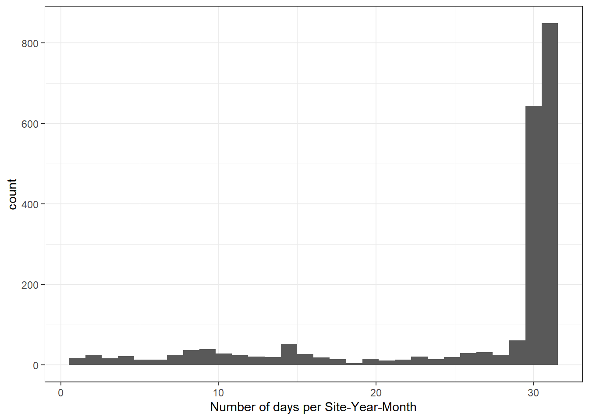
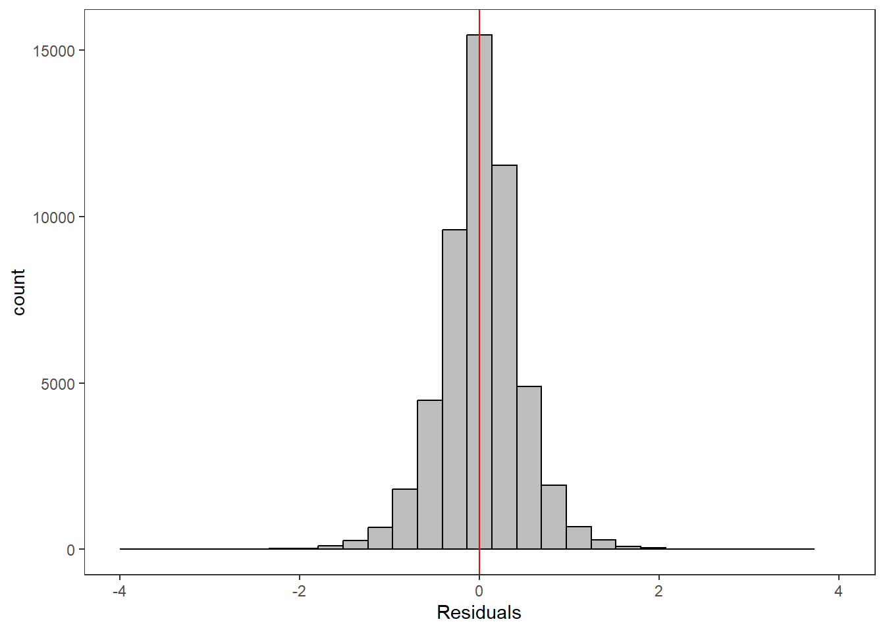

Purpose: fit hierarchical stream temp model to all EcoDrought data. Estimate random betas independently by site and month, then inspect spatiotemporal variation in effects of air temperature, flow, and their interaction of stream temperature.
This model uses air temperature and flow data standardized by site.
Notes:
Consider bringing in additional data from NWIS to fill in middle-upper end of catchment size spectrum (Snake: Blackrock, Cache, Granite…bigger rivers? Hoback, Gros Ventre, Greys…where to draw the line?)
consider putting a prior on flow variables in the JAGS model to deal with missing values (rather than setting NAs to 0, as in line 57)
7.1 Load data
Code
dat <-read_csv("data/EcoDrought_FlowTempData_formatted.csv") %>%mutate(month =month(date)) #%>%#filter(basin == "West Brook")# # redo basin and site codes# dat <- dat %>% arrange(basin, site_name, year, yday)# sitecodes <- tibble(site_name = unique(dat$site_name), site_code = 1:length(unique(dat$site_name)))# monthcodes <- tibble(month = unique(dat$month), month_code = 1:length(unique(dat$month)))# basincodes <- tibble(basin = unique(dat$basin), basin_code = 1:length(unique(dat$basin)))# # dat <- dat %>%# select(-c(site_code, basin_code)) %>%# left_join(sitecodes) %>%# left_join(monthcodes) %>%# left_join(basincodes) %>%# mutate(rowNum = 1:nrow(.))dat
Most Site-Year-Months are relatively complete (>29 days of data). But there are many that are incomplete, which likely affects convergence/accurate parameter estimation. Remove these periods and re-do basin, site, and month codes.
Code
dat %>%mutate(site_year_month =paste(site_name, year, month, sep ="_")) %>%group_by(site_year_month) %>%summarize(nobs =n()) %>%ggplot() +geom_histogram(aes(x = nobs)) +theme_bw() +xlab("Number of days per Site-Year-Month")

Code
# identify site-month-years to keep: those with >= 25 days of datakeeps <- dat %>%mutate(site_year_month =paste(site_name, year, month, sep ="_")) %>%group_by(site_year_month) %>%summarize(nobs =n()) %>%ungroup() %>%filter(nobs >=20)# filter data to keeps (~complete months)dat2 <- dat %>%mutate(site_year_month =paste(site_name, year, month, sep ="_")) %>%filter(site_year_month %in% keeps$site_year_month) %>%mutate(rowNum =1:nrow(.))# are the number of unique sites, basins, and months the same between unfiltered and filtered datasets?length(unique(dat$site_name))
[1] 65
Code
length(unique(dat2$site_name))
[1] 65
Code
length(unique(dat$basin))
[1] 7
Code
length(unique(dat2$basin))
[1] 7
Code
length(unique(dat$month))
[1] 12
Code
length(unique(dat2$month))
[1] 12
Code
# if YES, rename to datdat <- dat2# if NO, need to re-do site, basin, and month codes# ...# ...# ...sitecodes <- dat %>%group_by(site_code) %>%summarize(site_name =unique(site_name), basin =unique(basin),basin_code =unique(basin_code)) %>%ungroup()
Specify “hierarchical” model following Letcher et al. (2016). MODIFIED:
add prior on covariates to deal with missing values
calculate Bayesian R^2 and RMSE
remove the year trends (same as for Hocking et al 2018)
estimate covariate effects independently for each site and month (no pooling). This may need to be changed down the line…to account for inherent grouping of data within basins, sites, and months.
Code
cat("model {###----------------- LIKELIHOOD -----------------### # Days without an observation on the previous day (first observation in a series) # No autoregressive term for (i in 1:nFirstObsRows){ temp[firstObsRows[i]] ~ dnorm(stream.mu[firstObsRows[i]], pow(sigma, -2)) stream.mu[firstObsRows[i]] <- trend[firstObsRows[i]] trend[firstObsRows[i]] <- B1[site[firstObsRows[i]], month[firstObsRows[i]]] * X.site[firstObsRows[i],1] + B2[site[firstObsRows[i]], month[firstObsRows[i]]] * X.site[firstObsRows[i],2] + B3[site[firstObsRows[i]], month[firstObsRows[i]]] * X.site[firstObsRows[i],3] + B4[site[firstObsRows[i]], month[firstObsRows[i]]] * X.site[firstObsRows[i],4] + B5[site[firstObsRows[i]], month[firstObsRows[i]]] * X.site[firstObsRows[i],5] + B6[site[firstObsRows[i]], month[firstObsRows[i]]] * X.site[firstObsRows[i],6] #inprod(B.site[site[firstObsRows[i]], month[firstObsRows[i]], ], X.site[firstObsRows[i], ]) } # Days with an observation on the previous dat (all days following the first day) # Includes autoregressive term (ar1) for (i in 1:nEvalRows){ temp[evalRows[i]] ~ dnorm(stream.mu[evalRows[i]], pow(sigma, -2)) stream.mu[evalRows[i]] <- trend[evalRows[i]] + ar1[site[evalRows[i]]] * (temp[evalRows[i]-1] - trend[ evalRows[i]-1 ]) trend[evalRows[i]] <- B1[site[evalRows[i]], month[evalRows[i]]] * X.site[evalRows[i],1] + B2[site[evalRows[i]], month[evalRows[i]]] * X.site[evalRows[i],2] + B3[site[evalRows[i]], month[evalRows[i]]] * X.site[evalRows[i],3] + B4[site[evalRows[i]], month[evalRows[i]]] * X.site[evalRows[i],4] + B5[site[evalRows[i]], month[evalRows[i]]] * X.site[evalRows[i],5] + B6[site[evalRows[i]], month[evalRows[i]]] * X.site[evalRows[i],6] #inprod(B.site[site[evalRows[i]], month[evalRows[i]], ], X.site[evalRows[i], ]) } # Prior on covariates to handle missing (flow) data for (i in 1:n){ for (k in 1:Krandom) { X.site[i,k] ~ dnorm(0, pow(1, -2)) } } # Save log-likelihoods for LOO-CV for (i in 1:n) { loglik[i] <- logdensity.norm(temp[i], stream.mu[i], pow(sigma, -2)) } ###----------------- PRIORS ---------------------### # ar1, hierarchical by site for (i in 1:nsites){ ar1[i] ~ dnorm(ar1Mean, pow(ar1SD, -2)) T(-1,1) } ar1Mean ~ dunif(-1, 1) ar1SD ~ dunif(0, 2) # model variance sigma ~ dunif(0, 100) # random effect coefficients (by site) # for (k in 1:Krandom) { # sigma.B.site[k] ~ dunif(0, 100) # for (i in 1:nsites) { # for (m in unqmonths) { # B.site[i,m,k] ~ dnorm(0, pow(sigma.B.site[k], -2)) # } # } # } sigma.B1 ~ dunif(0, 100) sigma.B2 ~ dunif(0, 100) sigma.B3 ~ dunif(0, 100) sigma.B4 ~ dunif(0, 100) sigma.B5 ~ dunif(0, 100) sigma.B6 ~ dunif(0, 100) for (i in 1:nsites) { for (m in 1:nmonths) { B1[i,m] ~ dnorm(0, pow(sigma.B1, -2)) B2[i,m] ~ dnorm(0, pow(sigma.B2, -2)) B3[i,m] ~ dnorm(0, pow(sigma.B3, -2)) B4[i,m] ~ dnorm(0, pow(sigma.B4, -2)) B5[i,m] ~ dnorm(0, pow(sigma.B5, -2)) B6[i,m] ~ dnorm(0, pow(sigma.B6, -2)) } } # # random effect coefficients (by site with covariate effects, hierarchical by basin) # for (k in 1:Krandom) { # # # site level regressions # for (i in 1:nsites) { # B.site[i,k] ~ dnorm(mu.B.site[i,k], pow(sigma.B.site[k], -2)) # mu.B.site[i,k] <- alpha.0[basin[i],k] + alpha.1[basin[i],k] * elev[i] # } # # # basin level variation in elevation effects # for (j in 1:nbasins) { # alpha.0[j,k] ~ dnorm(mu.alpha.0[k], pow(sigma.alpha.0[k], -2)) # alpha.1[j,k] ~ dnorm(mu.alpha.1[k], pow(sigma.alpha.1[k], -2)) # } # # # hyperpriors: global means and standard deviations # mu.alpha.0[k] ~ dnorm(0, pow(10, -2)) # mu.alpha.1[k] ~ dnorm(0, pow(10, -2)) # # sigma.B.site[k] ~ dunif(0, 100) # # sigma.alpha.0[k] ~ dunif(0, 100) # sigma.alpha.1[k] ~ dunif(0, 100) # } ###----------------- DERIVED VALUES -------------### for (i in 1:n) { residuals[i] <- temp[i] - stream.mu[i] } # variance of model predictions (fixed + random effects) var_fit <- (sd(stream.mu))^2 # residual variance var_res <- (sd(residuals))^2 # calculate Bayesian R^2 R2 <- var_fit / (var_fit + var_res) # Root mean squared error rmse <- sqrt(mean(residuals[]^2)) }", file ="JAGS models/DailyTempModelJAGS_Letcher_hierarchical_modified_site-month.txt")
7.4 Organize objects
Get first observation indices and check that nFirstRowObs equals the number of unique site-years: must be TRUE!
Code
# row indices for first observation in each site-yearfirstObsRows <-unlist(dat %>%group_by(siteYear) %>%summarize(index = rowNum[min(which(!is.na(tempc_mean)))]) %>%ungroup() %>%select(index))nFirstObsRows <-length(firstObsRows)# does the number of first observations match the number of site years?nFirstObsRows ==length(unique(dat$siteYear))
rm(fit_ed)write_csv(rownames_to_column(as.data.frame(param.summary), var ="par"), "Model objects/LetcherTempModel_EcoDrought_hierarchical_SiteMonth_paramsummary.csv")
7.5.0.2 Check convergence
Any problematic R-hat values (>1.05)?
Clearly some convergence issues for a few parameters. Probably driven by sites/months with poor data availability, or omission of year effects/offsets. Good enough for now…but should diagnose these at some point. Pooling may help with this.
ggplot() +geom_histogram(aes(x =c(ppdat_obs_mean - ppdat_exp_mean)), color ="black", fill ="grey") +xlab("Residuals") +theme_bw() +theme(panel.grid =element_blank()) +geom_vline(xintercept =0, color ="red") +xlim(-4,4)

Residuals by time (day of year): are we missing something important? Like some time dependent variable (e.g., water source to flow ~~ the transition from snowmelt to groundwater).
Code
tibble(site_name = dat$site_name, year = dat$year, yday = dat$yday, resid =c(ppdat_obs_mean - ppdat_exp_mean)) %>%ggplot(aes(x = yday, y = resid)) +geom_point(alpha =0.1) +geom_hline(yintercept =c(0), color ="red") +geom_smooth(se =FALSE, linewidth =1.5) +theme_bw() +#theme(panel.grid = element_blank()) +xlab("Day of year") +ylab("Residual") +#facet_wrap(~site_name) + coord_cartesian(ylim =c(-3,3)) #+ facet_wrap(~year)
It’s not clear how informative monthly intercepts are as the air temp and flow data are standardized by site, not by site AND month. Regardless, some interesting patterns.
There are some really interesting temporal patterns in the effect of temperature, with temperature sensitivity generally at it’s maximum during high flow months (snowmelt/runoff), and reduced sensitivity during low flow months (baseflow). This appears to be conserved across basins.
There are some really interesting temporal patterns here, with the effect of flow varying considerably over time within sites. In some basins/sites, the sign of the flow effect changes seasonally, often negative in the spring and positive in the summer. In Staunton and West Brook, flow effects are also always positive: in Staunton, the strongest flow effects are during the spring and autumn, whereas in West Brook, the strongest effects are during summer.
There really aren’t any clear patterns here, and I wonder how useful this interaction is given that we’re allowing the effects of air temp and flow to vary by month.
I’m starting to wonder how reasonable it is to include these lagged effect of air temperature in this model. Lagged variables do have strong effects, and Ben included them in his 2016 and 2018 papers…but those model were built for prediction
Again, some potentially interesting patterns, but given the strong correlation with air temp and that we are trying to make inference from the model…probably best just to drop
result %>%filter(basin =="Donner Blitzen") %>%ggplot() +geom_smooth(aes(x = month, y = est_mean), color ="black") +geom_point(aes(x = month, y = est_mean, color = site_name)) +geom_line(aes(x = month, y = est_mean, color = site_name)) +labs(title ="Donner Blitzen", x ="Month", y ="Intercept") +#geom_vline(xintercept = 0, linetype = "dashed") +theme_bw()
Code
result %>%filter(basin =="Flathead") %>%ggplot() +geom_smooth(aes(x = month, y = est_mean), color ="black") +geom_point(aes(x = month, y = est_mean, color = site_name)) +geom_line(aes(x = month, y = est_mean, color = site_name)) +labs(title ="Flathead", x ="Month", y ="Intercept") +#geom_vline(xintercept = 0, linetype = "dashed") +theme_bw()
Code
result %>%filter(basin =="Paine Run") %>%ggplot() +geom_smooth(aes(x = month, y = est_mean), color ="black") +geom_point(aes(x = month, y = est_mean, color = site_name)) +geom_line(aes(x = month, y = est_mean, color = site_name)) +labs(title ="Paine Run", x ="Month", y ="Intercept") +#geom_vline(xintercept = 0, linetype = "dashed") +theme_bw()
Code
result %>%filter(basin =="Snake River") %>%ggplot() +geom_smooth(aes(x = month, y = est_mean), color ="black") +geom_point(aes(x = month, y = est_mean, color = site_name)) +geom_line(aes(x = month, y = est_mean, color = site_name)) +labs(title ="Snake River", x ="Month", y ="Intercept") +#geom_vline(xintercept = 0, linetype = "dashed") +theme_bw()
Code
result %>%filter(basin =="Staunton River") %>%ggplot() +geom_smooth(aes(x = month, y = est_mean), color ="black") +geom_point(aes(x = month, y = est_mean, color = site_name)) +geom_line(aes(x = month, y = est_mean, color = site_name)) +labs(title ="Staunton River", x ="Month", y ="Intercept") +#geom_vline(xintercept = 0, linetype = "dashed") +theme_bw()
Code
result %>%filter(basin =="West Brook") %>%ggplot() +geom_smooth(aes(x = month, y = est_mean), color ="black") +geom_point(aes(x = month, y = est_mean, color = site_name)) +geom_line(aes(x = month, y = est_mean, color = site_name)) +labs(title ="West Brook", x ="Month", y ="Intercept") +#geom_vline(xintercept = 0, linetype = "dashed") +theme_bw()
Code
result %>%filter(basin =="Yellowstone") %>%ggplot() +geom_smooth(aes(x = month, y = est_mean), color ="black") +geom_point(aes(x = month, y = est_mean, color = site_name)) +geom_line(aes(x = month, y = est_mean, color = site_name)) +labs(title ="Yellowstone", x ="Month", y ="Intercept") +#geom_vline(xintercept = 0, linetype = "dashed") +theme_bw()
7.7.2 Temp Effects
Code
# extract relevant parameter namesallpars2 <-row.names(param.summary)temppars <- allpars2[grepl("B2", allpars2)]temppars <- temppars[-length(temppars)]# get numeric components (site code and month)m <-str_match(temppars, "\\[(\\d+),(\\d+)\\]")# create tibble with means and 95% credible intervalsresult <-tibble(site_code =as.integer(m[,2]),month =as.integer(m[,3]),est_mean = param.summary[temppars,1],est_low = param.summary[temppars,3],est_high = param.summary[temppars,7] ) %>%mutate(cont0 =contains_zero(est_low, est_high)) %>%left_join(sitecodes) %>%left_join(sitemonths) %>%filter(!is.na(site_month_code)) %>%mutate(site_name =factor(site_name, levels =unique(dat$site_name)))
result %>%filter(basin =="Donner Blitzen") %>%ggplot() +geom_smooth(aes(x = month, y = est_mean), color ="black") +geom_point(aes(x = month, y = est_mean, color = site_name, shape = cont0)) +geom_line(aes(x = month, y = est_mean, color = site_name)) +labs(title ="Donner Blitzen", x ="Month", y ="Flow Effect") +geom_hline(yintercept =0, linetype ="dashed") +theme_bw()
Code
result %>%filter(basin =="Flathead") %>%ggplot() +geom_smooth(aes(x = month, y = est_mean), color ="black") +geom_point(aes(x = month, y = est_mean, color = site_name, shape = cont0)) +geom_line(aes(x = month, y = est_mean, color = site_name)) +labs(title ="Flathead", x ="Month", y ="Flow Effect") +geom_hline(yintercept =0, linetype ="dashed") +theme_bw()
Code
result %>%filter(basin =="Paine Run") %>%ggplot() +geom_smooth(aes(x = month, y = est_mean), color ="black") +geom_point(aes(x = month, y = est_mean, color = site_name, shape = cont0)) +geom_line(aes(x = month, y = est_mean, color = site_name)) +labs(title ="Paine Run", x ="Month", y ="Flow Effect") +geom_hline(yintercept =0, linetype ="dashed") +theme_bw()
Code
result %>%filter(basin =="Snake River") %>%ggplot() +geom_smooth(aes(x = month, y = est_mean), color ="black") +geom_point(aes(x = month, y = est_mean, color = site_name, shape = cont0)) +geom_line(aes(x = month, y = est_mean, color = site_name)) +labs(title ="Snake River", x ="Month", y ="Flow Effect") +geom_hline(yintercept =0, linetype ="dashed") +theme_bw()
Code
result %>%filter(basin =="Staunton River") %>%ggplot() +geom_smooth(aes(x = month, y = est_mean), color ="black") +geom_point(aes(x = month, y = est_mean, color = site_name, shape = cont0)) +geom_line(aes(x = month, y = est_mean, color = site_name)) +labs(title ="Staunton River", x ="Month", y ="Flow Effect") +geom_hline(yintercept =0, linetype ="dashed") +theme_bw()
Code
result %>%filter(basin =="West Brook") %>%ggplot() +geom_smooth(aes(x = month, y = est_mean), color ="black") +geom_point(aes(x = month, y = est_mean, color = site_name, shape = cont0)) +geom_line(aes(x = month, y = est_mean, color = site_name)) +labs(title ="West Brook", x ="Month", y ="Flow Effect") +geom_hline(yintercept =0, linetype ="dashed") +theme_bw()
Code
result %>%filter(basin =="Yellowstone") %>%ggplot() +geom_smooth(aes(x = month, y = est_mean), color ="black") +geom_point(aes(x = month, y = est_mean, color = site_name, shape = cont0)) +geom_line(aes(x = month, y = est_mean, color = site_name)) +labs(title ="Yellowstone", x ="Month", y ="Flow Effect") +geom_hline(yintercept =0, linetype ="dashed") +theme_bw()
7.7.4 Lag 1 Temp Effects
Code
# extract relevant parameter namesallpars2 <-row.names(param.summary)temppars <- allpars2[grepl("B5", allpars2)]temppars <- temppars[-length(temppars)]# get numeric components (site code and month)m <-str_match(temppars, "\\[(\\d+),(\\d+)\\]")# create tibble with means and 95% credible intervalsresult <-tibble(site_code =as.integer(m[,2]),month =as.integer(m[,3]),est_mean = param.summary[temppars,1],est_low = param.summary[temppars,3],est_high = param.summary[temppars,7] ) %>%mutate(cont0 =contains_zero(est_low, est_high)) %>%left_join(sitecodes) %>%left_join(sitemonths) %>%filter(!is.na(site_month_code)) %>%mutate(site_name =factor(site_name, levels =unique(dat$site_name)))
result %>%filter(basin =="Donner Blitzen") %>%ggplot() +geom_smooth(aes(x = month, y = est_mean), color ="black") +geom_point(aes(x = month, y = est_mean, color = site_name, shape = cont0)) +geom_line(aes(x = month, y = est_mean, color = site_name)) +labs(title ="Donner Blitzen", x ="Month", y ="Lag 1 Temperature Effect") +#geom_vline(xintercept = 0, linetype = "dashed") +theme_bw()
Code
result %>%filter(basin =="Flathead") %>%ggplot() +geom_smooth(aes(x = month, y = est_mean), color ="black") +geom_point(aes(x = month, y = est_mean, color = site_name, shape = cont0)) +geom_line(aes(x = month, y = est_mean, color = site_name)) +labs(title ="Flathead", x ="Month", y ="Lag 1 Temperature Effect") +#geom_vline(xintercept = 0, linetype = "dashed") +theme_bw()
Code
result %>%filter(basin =="Paine Run") %>%ggplot() +geom_smooth(aes(x = month, y = est_mean), color ="black") +geom_point(aes(x = month, y = est_mean, color = site_name, shape = cont0)) +geom_line(aes(x = month, y = est_mean, color = site_name)) +labs(title ="Paine Run", x ="Month", y ="Lag 1 Temperature Effect") +#geom_vline(xintercept = 0, linetype = "dashed") +theme_bw()
Code
result %>%filter(basin =="Snake River") %>%ggplot() +geom_smooth(aes(x = month, y = est_mean), color ="black") +geom_point(aes(x = month, y = est_mean, color = site_name, shape = cont0)) +geom_line(aes(x = month, y = est_mean, color = site_name)) +labs(title ="Snake River", x ="Month", y ="Lag 1 Temperature Effect") +#geom_vline(xintercept = 0, linetype = "dashed") +theme_bw()
Code
result %>%filter(basin =="Staunton River") %>%ggplot() +geom_smooth(aes(x = month, y = est_mean), color ="black") +geom_point(aes(x = month, y = est_mean, color = site_name, shape = cont0)) +geom_line(aes(x = month, y = est_mean, color = site_name)) +labs(title ="Staunton River", x ="Month", y ="Lag 1 Temperature Effect") +#geom_vline(xintercept = 0, linetype = "dashed") +theme_bw()
Code
result %>%filter(basin =="West Brook") %>%ggplot() +geom_smooth(aes(x = month, y = est_mean), color ="black") +geom_point(aes(x = month, y = est_mean, color = site_name, shape = cont0)) +geom_line(aes(x = month, y = est_mean, color = site_name)) +labs(title ="West Brook", x ="Month", y ="Lag 1 Temperature Effect") +#geom_vline(xintercept = 0, linetype = "dashed") +theme_bw()
Code
result %>%filter(basin =="Yellowstone") %>%ggplot() +geom_smooth(aes(x = month, y = est_mean), color ="black") +geom_point(aes(x = month, y = est_mean, color = site_name, shape = cont0)) +geom_line(aes(x = month, y = est_mean, color = site_name)) +labs(title ="Yellowstone", x ="Month", y ="Lag 1 Temperature Effect") +#geom_vline(xintercept = 0, linetype = "dashed") +theme_bw()
Source Code
---title: "ModelTemp: EcoD, time varying"---**Purpose:** fit hierarchical stream temp model to all EcoDrought data. Estimate random betas independently by site and month, then inspect spatiotemporal variation in effects of air temperature, flow, and their interaction of stream temperature.**This model uses air temperature and flow data standardized by site.**```{r include=FALSE}library(tidyverse)library(R2jags)library(MCMCvis)library(loo)library(HDInterval)library(scales)library(ggmcmc)library(GGally)library(beepr)library(lme4)library(factoextra)```Notes:* Consider bringing in additional data from NWIS to fill in middle-upper end of catchment size spectrum (Snake: Blackrock, Cache, Granite...bigger rivers? Hoback, Gros Ventre, Greys...where to draw the line?)* consider putting a prior on flow variables in the JAGS model to deal with missing values (rather than setting NAs to 0, as in line 57)## Load data```{r}dat <-read_csv("data/EcoDrought_FlowTempData_formatted.csv") %>%mutate(month =month(date)) #%>%#filter(basin == "West Brook")# # redo basin and site codes# dat <- dat %>% arrange(basin, site_name, year, yday)# sitecodes <- tibble(site_name = unique(dat$site_name), site_code = 1:length(unique(dat$site_name)))# monthcodes <- tibble(month = unique(dat$month), month_code = 1:length(unique(dat$month)))# basincodes <- tibble(basin = unique(dat$basin), basin_code = 1:length(unique(dat$basin)))# # dat <- dat %>%# select(-c(site_code, basin_code)) %>%# left_join(sitecodes) %>%# left_join(monthcodes) %>%# left_join(basincodes) %>%# mutate(rowNum = 1:nrow(.))dat```Most Site-Year-Months are relatively complete (>29 days of data). But there are many that are incomplete, which likely affects convergence/accurate parameter estimation. Remove these periods and re-do basin, site, and month codes.```{r}dat %>%mutate(site_year_month =paste(site_name, year, month, sep ="_")) %>%group_by(site_year_month) %>%summarize(nobs =n()) %>%ggplot() +geom_histogram(aes(x = nobs)) +theme_bw() +xlab("Number of days per Site-Year-Month")# identify site-month-years to keep: those with >= 25 days of datakeeps <- dat %>%mutate(site_year_month =paste(site_name, year, month, sep ="_")) %>%group_by(site_year_month) %>%summarize(nobs =n()) %>%ungroup() %>%filter(nobs >=20)# filter data to keeps (~complete months)dat2 <- dat %>%mutate(site_year_month =paste(site_name, year, month, sep ="_")) %>%filter(site_year_month %in% keeps$site_year_month) %>%mutate(rowNum =1:nrow(.))# are the number of unique sites, basins, and months the same between unfiltered and filtered datasets?length(unique(dat$site_name))length(unique(dat2$site_name))length(unique(dat$basin))length(unique(dat2$basin))length(unique(dat$month))length(unique(dat2$month))# if YES, rename to datdat <- dat2# if NO, need to re-do site, basin, and month codes# ...# ...# ...sitecodes <- dat %>%group_by(site_code) %>%summarize(site_name =unique(site_name), basin =unique(basin),basin_code =unique(basin_code)) %>%ungroup()```View basins and sites```{r}DT::datatable(dat %>%group_by(basin, site_name, site_code) %>%summarise(n =n()) )```How much missing data? *Need to put a prior on flow*```{r}sum(is.na(dat$z_air_temp_mean))sum(is.na(dat$z_air_temp_mean_lag1))sum(is.na(dat$z_air_temp_mean_lag2))sum(is.na(dat$z_Yield_mm_log))```## View data### Temp-flow correlation::: panel-tabset#### West Brook```{r message=FALSE}dat %>%filter(basin =="West Brook") %>%ggplot(aes(x = z_air_temp_mean, y = z_Yield_mm_log, colour = tempc_mean)) +geom_point(size =0.2) +facet_wrap(~site_name) +theme_bw() + ggpubr::stat_cor()```#### Staunton River```{r}dat %>%filter(basin =="Staunton River") %>%ggplot(aes(x = z_air_temp_mean, y = z_Yield_mm_log, colour = tempc_mean)) +geom_point(size =0.2) +facet_wrap(~site_name) +theme_bw() + ggpubr::stat_cor()```#### Paine Run```{r}dat %>%filter(basin =="Paine Run") %>%ggplot(aes(x = z_air_temp_mean, y = z_Yield_mm_log, colour = tempc_mean)) +geom_point(size =0.2) +facet_wrap(~site_name) +theme_bw() + ggpubr::stat_cor()```#### Flathead```{r}dat %>%filter(basin =="Flathead") %>%ggplot(aes(x = z_air_temp_mean, y = z_Yield_mm_log, colour = tempc_mean)) +geom_point(size =0.2) +facet_wrap(~site_name) +theme_bw() + ggpubr::stat_cor()```#### Yellowstone```{r}dat %>%filter(basin =="Yellowstone") %>%ggplot(aes(x = z_air_temp_mean, y = z_Yield_mm_log, colour = tempc_mean)) +geom_point(size =0.2) +facet_wrap(~site_name) +theme_bw() + ggpubr::stat_cor()```#### Snake River```{r}dat %>%filter(basin =="Snake River") %>%ggplot(aes(x = z_air_temp_mean, y = z_Yield_mm_log, colour = tempc_mean)) +geom_point(size =0.2) +facet_wrap(~site_name) +theme_bw() + ggpubr::stat_cor()```#### Donner Blitzen```{r}dat %>%filter(basin =="Donner Blitzen") %>%ggplot(aes(x = z_air_temp_mean, y = z_Yield_mm_log, colour = tempc_mean)) +geom_point(size =0.2) +facet_wrap(~site_name) +theme_bw() + ggpubr::stat_cor()```:::### Tw ~ Ta + F::: panel-tabset#### West Brook```{r}dat %>%filter(basin =="West Brook") %>%ggplot(aes(x = z_air_temp_mean, y = tempc_mean, color = z_Yield_mm_log)) +geom_point(size =0.2) +facet_wrap(~site_name) +theme_bw()```#### Staunton River```{r}dat %>%filter(basin =="Staunton River") %>%ggplot(aes(x = z_air_temp_mean, y = tempc_mean, color = z_Yield_mm_log)) +geom_point(size =0.2) +facet_wrap(~site_name) +theme_bw()```#### Paine Run```{r}dat %>%filter(basin =="Paine Run") %>%ggplot(aes(x = z_air_temp_mean, y = tempc_mean, color = z_Yield_mm_log)) +geom_point(size =0.2) +facet_wrap(~site_name) +theme_bw()```#### Flathead```{r}dat %>%filter(basin =="Flathead") %>%ggplot(aes(x = z_air_temp_mean, y = tempc_mean, color = z_Yield_mm_log)) +geom_point(size =0.2) +facet_wrap(~site_name) +theme_bw()```#### Yellowstone```{r}dat %>%filter(basin =="Yellowstone") %>%ggplot(aes(x = z_air_temp_mean, y = tempc_mean, color = z_Yield_mm_log)) +geom_point(size =0.2) +facet_wrap(~site_name) +theme_bw()```#### Snake River```{r}dat %>%filter(basin =="Snake River") %>%ggplot(aes(x = z_air_temp_mean, y = tempc_mean, color = z_Yield_mm_log)) +geom_point(size =0.2) +facet_wrap(~site_name) +theme_bw()```#### Donner Blitzen```{r}dat %>%filter(basin =="Donner Blitzen") %>%ggplot(aes(x = z_air_temp_mean, y = tempc_mean, color = z_Yield_mm_log)) +geom_point(size =0.2) +facet_wrap(~site_name) +theme_bw()```:::```{r}dat %>%filter(basin =="Flathead") %>%ggplot(aes(x = z_air_temp_mean, y = tempc_mean, color = yday)) +geom_point(size =0.2) +facet_wrap(~site_name) +theme_bw()dat %>%filter(site_name =="CoalCreekLower") %>%ggplot(aes(x = date, y = tempc_mean)) +geom_line()dat %>%filter(site_name =="CoalCreekLower") %>%ggplot(aes(x = date, y = Yield_mm_log)) +geom_line()```### Pairs plot*Hmmm...given that we're trying to make inference from this model, perhaps including lagged air temp variables no longer makes sense...*```{r}ggpairs(dat %>%select(yday, z_air_temp_mean, z_Yield_mm_log, z_air_temp_mean_lag1, z_air_temp_mean_lag2))```## Specify JAGS modelSpecify "hierarchical" model following Letcher et al. (2016). MODIFIED:* add prior on covariates to deal with missing values* calculate Bayesian R^2 and RMSE* remove the year trends (same as for Hocking et al 2018)* estimate covariate effects independently for each site and month (no pooling). *This may need to be changed down the line...to account for inherent grouping of data within basins, sites, and months.*```{r}cat("model {###----------------- LIKELIHOOD -----------------### # Days without an observation on the previous day (first observation in a series) # No autoregressive term for (i in 1:nFirstObsRows){ temp[firstObsRows[i]] ~ dnorm(stream.mu[firstObsRows[i]], pow(sigma, -2)) stream.mu[firstObsRows[i]] <- trend[firstObsRows[i]] trend[firstObsRows[i]] <- B1[site[firstObsRows[i]], month[firstObsRows[i]]] * X.site[firstObsRows[i],1] + B2[site[firstObsRows[i]], month[firstObsRows[i]]] * X.site[firstObsRows[i],2] + B3[site[firstObsRows[i]], month[firstObsRows[i]]] * X.site[firstObsRows[i],3] + B4[site[firstObsRows[i]], month[firstObsRows[i]]] * X.site[firstObsRows[i],4] + B5[site[firstObsRows[i]], month[firstObsRows[i]]] * X.site[firstObsRows[i],5] + B6[site[firstObsRows[i]], month[firstObsRows[i]]] * X.site[firstObsRows[i],6] #inprod(B.site[site[firstObsRows[i]], month[firstObsRows[i]], ], X.site[firstObsRows[i], ]) } # Days with an observation on the previous dat (all days following the first day) # Includes autoregressive term (ar1) for (i in 1:nEvalRows){ temp[evalRows[i]] ~ dnorm(stream.mu[evalRows[i]], pow(sigma, -2)) stream.mu[evalRows[i]] <- trend[evalRows[i]] + ar1[site[evalRows[i]]] * (temp[evalRows[i]-1] - trend[ evalRows[i]-1 ]) trend[evalRows[i]] <- B1[site[evalRows[i]], month[evalRows[i]]] * X.site[evalRows[i],1] + B2[site[evalRows[i]], month[evalRows[i]]] * X.site[evalRows[i],2] + B3[site[evalRows[i]], month[evalRows[i]]] * X.site[evalRows[i],3] + B4[site[evalRows[i]], month[evalRows[i]]] * X.site[evalRows[i],4] + B5[site[evalRows[i]], month[evalRows[i]]] * X.site[evalRows[i],5] + B6[site[evalRows[i]], month[evalRows[i]]] * X.site[evalRows[i],6] #inprod(B.site[site[evalRows[i]], month[evalRows[i]], ], X.site[evalRows[i], ]) } # Prior on covariates to handle missing (flow) data for (i in 1:n){ for (k in 1:Krandom) { X.site[i,k] ~ dnorm(0, pow(1, -2)) } } # Save log-likelihoods for LOO-CV for (i in 1:n) { loglik[i] <- logdensity.norm(temp[i], stream.mu[i], pow(sigma, -2)) } ###----------------- PRIORS ---------------------### # ar1, hierarchical by site for (i in 1:nsites){ ar1[i] ~ dnorm(ar1Mean, pow(ar1SD, -2)) T(-1,1) } ar1Mean ~ dunif(-1, 1) ar1SD ~ dunif(0, 2) # model variance sigma ~ dunif(0, 100) # random effect coefficients (by site) # for (k in 1:Krandom) { # sigma.B.site[k] ~ dunif(0, 100) # for (i in 1:nsites) { # for (m in unqmonths) { # B.site[i,m,k] ~ dnorm(0, pow(sigma.B.site[k], -2)) # } # } # } sigma.B1 ~ dunif(0, 100) sigma.B2 ~ dunif(0, 100) sigma.B3 ~ dunif(0, 100) sigma.B4 ~ dunif(0, 100) sigma.B5 ~ dunif(0, 100) sigma.B6 ~ dunif(0, 100) for (i in 1:nsites) { for (m in 1:nmonths) { B1[i,m] ~ dnorm(0, pow(sigma.B1, -2)) B2[i,m] ~ dnorm(0, pow(sigma.B2, -2)) B3[i,m] ~ dnorm(0, pow(sigma.B3, -2)) B4[i,m] ~ dnorm(0, pow(sigma.B4, -2)) B5[i,m] ~ dnorm(0, pow(sigma.B5, -2)) B6[i,m] ~ dnorm(0, pow(sigma.B6, -2)) } } # # random effect coefficients (by site with covariate effects, hierarchical by basin) # for (k in 1:Krandom) { # # # site level regressions # for (i in 1:nsites) { # B.site[i,k] ~ dnorm(mu.B.site[i,k], pow(sigma.B.site[k], -2)) # mu.B.site[i,k] <- alpha.0[basin[i],k] + alpha.1[basin[i],k] * elev[i] # } # # # basin level variation in elevation effects # for (j in 1:nbasins) { # alpha.0[j,k] ~ dnorm(mu.alpha.0[k], pow(sigma.alpha.0[k], -2)) # alpha.1[j,k] ~ dnorm(mu.alpha.1[k], pow(sigma.alpha.1[k], -2)) # } # # # hyperpriors: global means and standard deviations # mu.alpha.0[k] ~ dnorm(0, pow(10, -2)) # mu.alpha.1[k] ~ dnorm(0, pow(10, -2)) # # sigma.B.site[k] ~ dunif(0, 100) # # sigma.alpha.0[k] ~ dunif(0, 100) # sigma.alpha.1[k] ~ dunif(0, 100) # } ###----------------- DERIVED VALUES -------------### for (i in 1:n) { residuals[i] <- temp[i] - stream.mu[i] } # variance of model predictions (fixed + random effects) var_fit <- (sd(stream.mu))^2 # residual variance var_res <- (sd(residuals))^2 # calculate Bayesian R^2 R2 <- var_fit / (var_fit + var_res) # Root mean squared error rmse <- sqrt(mean(residuals[]^2)) }", file ="JAGS models/DailyTempModelJAGS_Letcher_hierarchical_modified_site-month.txt")```## Organize objectsGet first observation indices and check that nFirstRowObs equals the number of unique site-years: **must be TRUE!**```{r}# row indices for first observation in each site-yearfirstObsRows <-unlist(dat %>%group_by(siteYear) %>%summarize(index = rowNum[min(which(!is.na(tempc_mean)))]) %>%ungroup() %>%select(index))nFirstObsRows <-length(firstObsRows)# does the number of first observations match the number of site years?nFirstObsRows ==length(unique(dat$siteYear))```Get row indices for all other observations```{r}evalRows <-unlist(dat %>%filter(!rowNum %in% firstObsRows) %>%select(rowNum))nEvalRows <-length(evalRows)```Fixed and random effect data```{r}data.random <-data.frame(intercept =1,airTemp = dat$z_air_temp_mean, flow = dat$z_Yield_mm_log,airFlow = dat$z_air_temp_mean * dat$z_Yield_mm_log,airTempLag1 = dat$z_air_temp_mean_lag1,airTempLag2 = dat$z_air_temp_mean_lag2 )# data.random.covs <- log(dat %>% group_by(site_code) %>% summarize(area_sqmi = unique(area_sqmi)) %>% ungroup() %>% arrange(site_code) %>% pull(area_sqmi))# data.random.covs <- dat %>% # group_by(site_code) %>% # summarize(basin = unique(basin), elev_ft = unique(elev_ft), area_sqmi = unique(area_sqmi)) %>% # ungroup() %>%# group_by(basin) %>%# mutate(z_elev_ft = c(scale(elev_ft)),# z_area_sqmi = c(scale(area_sqmi))) %>%# ungroup() %>% # arrange(site_code)# # data.random.basins <- dat %>%# group_by(site_code) %>% # summarize(basin_code = unique(basin_code)) %>% # ungroup() %>%# arrange(site_code) %>% # pull(basin_code)any(is.na(data.random))# any(is.na(data.random.covs))```Misc. objects (*no longer needed given that we dropped year effects*)```{r}# Ti <- length(unique(dat$year))# L <- dim(data.random.years)[2]# W.year <- diag(L)```Combine data in list```{r}# combine data in a listjags.data <-list("temp"= dat$tempc_mean,"nFirstObsRows"= nFirstObsRows,"firstObsRows"= firstObsRows,"nEvalRows"= nEvalRows,"evalRows"= evalRows,"X.site"=as.matrix(data.random),"Krandom"=dim(data.random)[2],"nsites"=length(unique(dat$site_name)),"nmonths"=length(unique(dat$month)),# "nbasins" = length(unique(dat$basin)),"n"=dim(dat)[1],"site"= dat$site_code,"month"= dat$month# "basin" = data.random.basins,# "elev" = data.random.covs %>% pull(z_elev_ft)#,#"area" = data.random.covs %>% pull(z_area_sqmi) )```Parameters to monitor```{r}jags.params <-c("temp", "stream.mu", "sigma","ar1" , "ar1Mean", "ar1SD","B1", "B2", "B3", "B4", "B5", "B6", "sigma.B1", "sigma.B2", "sigma.B3", "sigma.B4", "sigma.B5", "sigma.B6", #"B.site", "sigma.B.site", # "alpha.0", "mu.alpha.0", "sigma.alpha.0", # "alpha.1", "mu.alpha.1", "sigma.alpha.1",# "alpha.2", "mu.alpha.2", "sigma.alpha.2",# "alpha.3", "mu.alpha.3", "sigma.alpha.3","residuals", "deviance","R2", "rmse", "loglik" )```## Fit model```{r eval=FALSE}st <-Sys.time()fit_ed <-jags.parallel(data = jags.data, inits =NULL, parameters.to.save = jags.params, model.file ="JAGS models/DailyTempModelJAGS_Letcher_hierarchical_modified_site-month.txt",n.chains =10, n.thin =10, n.burnin =1000, n.iter =3000, DIC =TRUE)Sys.time() - st```#### Save model ouputSave to file```{r eval=FALSE}saveRDS(fit_ed, "Model objects/LetcherTempModel_EcoDrought_hierarchical_SiteMonth.RDS")```Read in fitted model object```{r cache=FALSE}fit_ed <-readRDS("Model objects/LetcherTempModel_EcoDrought_hierarchical_SiteMonth.RDS")```Get MCMC samples and summary```{r cache=FALSE}top_mod <- fit_ed# generate MCMC samples and store as an arraymodelout <- top_mod$BUGSoutputMcmcList <-vector("list", length =dim(modelout$sims.array)[2])for(i in1:length(McmcList)) { McmcList[[i]] = coda::as.mcmc(modelout$sims.array[,i,]) }# rbind MCMC samples from 10 chains Mcmcdat <-rbind(McmcList[[1]], McmcList[[2]], McmcList[[3]], McmcList[[4]], McmcList[[5]], McmcList[[6]], McmcList[[7]], McmcList[[8]], McmcList[[9]], McmcList[[10]])param.summary <- modelout$summaryhead(param.summary)rm(fit_ed)write_csv(rownames_to_column(as.data.frame(param.summary), var ="par"), "Model objects/LetcherTempModel_EcoDrought_hierarchical_SiteMonth_paramsummary.csv")```#### Check convergenceAny problematic R-hat values (>1.05)?*Clearly some convergence issues for a few parameters. Probably driven by sites/months with poor data availability, or omission of year effects/offsets. Good enough for now...but should diagnose these at some point. Pooling may help with this.*```{r eval=FALSE}top_mod$BUGSoutput$summary[,8][top_mod$BUGSoutput$summary[,8] >1.05]```View traceplots```{r eval=FALSE}MCMCtrace(top_mod, ind =TRUE, params =c(#"B.0", "B1", # "B.year", # "ar1", # "alpha.0", # "alpha.1","sigma"), pdf =FALSE)```Convert to ggs object```{r cache=FALSE}ggfit <-ggs(coda::as.mcmc(top_mod), keep_original_order =TRUE)head(ggfit)```### LOO-CV*LOO diagnostics indicates that the model fits the data ~well.*```{r cache=FALSE}loglik <- top_mod$BUGSoutput$sims.list$loglik # extract the log-likelihood estimates for each MCMC samplerf <-relative_eff(exp(loglik), chain_id =rep(1:10, each =200))my_loo <-loo(loglik, r_eff = rf)my_looplot(my_loo)```### Goodness of fitFormat observed and predicted values```{r cache=FALSE}Mcmcdat <-as_tibble(Mcmcdat)# subset expected and observed MCMC samplesppdat_exp <-as.matrix(Mcmcdat[,startsWith(names(Mcmcdat), "stream.mu[")])ppdat_obs <-as.matrix(Mcmcdat[,startsWith(names(Mcmcdat), "temp[")])```Bayesian p-value```{r}sum(ppdat_exp > ppdat_obs) / (dim(ppdat_obs)[1]*dim(ppdat_obs)[2])```PP-check, global```{r}ppdat_obs_mean <-apply(ppdat_obs, 2, mean)ppdat_exp_mean <-apply(ppdat_exp, 2, mean)tibble(obs = ppdat_obs_mean, exp = ppdat_exp_mean) %>%ggplot(aes(x = obs, y = exp)) +geom_point(alpha =0.1) +# geom_smooth(method = "lm") +geom_abline(intercept =0, slope =1, color ="red") +theme_bw() +theme(panel.grid =element_blank()) +xlab("Observed") +ylab("Predicted (mean)")```RMSE```{r}mean(unlist(ggfit %>%filter(Parameter =="rmse") %>%select(value)))ggs_density(ggfit, "rmse") +theme_bw() +theme(panel.grid =element_blank())```R-squared```{r}mean(unlist(ggfit %>%filter(Parameter =="R2") %>%select(value)))ggs_density(ggfit, "R2") +theme_bw() +theme(panel.grid =element_blank())```Histogram of residuals```{r}ggplot() +geom_histogram(aes(x =c(ppdat_obs_mean - ppdat_exp_mean)), color ="black", fill ="grey") +xlab("Residuals") +theme_bw() +theme(panel.grid =element_blank()) +geom_vline(xintercept =0, color ="red") +xlim(-4,4)```Residuals by time (day of year): are we missing something important? Like some time dependent variable (e.g., water source to flow ~~ the transition from snowmelt to groundwater). ```{r}tibble(site_name = dat$site_name, year = dat$year, yday = dat$yday, resid =c(ppdat_obs_mean - ppdat_exp_mean)) %>%ggplot(aes(x = yday, y = resid)) +geom_point(alpha =0.1) +geom_hline(yintercept =c(0), color ="red") +geom_smooth(se =FALSE, linewidth =1.5) +theme_bw() +#theme(panel.grid = element_blank()) +xlab("Day of year") +ylab("Residual") +#facet_wrap(~site_name) + coord_cartesian(ylim =c(-3,3)) #+ facet_wrap(~year)```## Dot plots```{r}unique(dat$basin)allpars <-unique(ggfit$Parameter)```### Intercepts*It's not clear how informative monthly intercepts are as the air temp and flow data are standardized by site, not by site AND month. Regardless, some interesting patterns.*::: panel-tabset#### Donner Blitzen```{r fig.width=7, fig.height=9}temptib <- dat %>%group_by(basin, site_name, site_code) %>%summarize(month =unique(month)) %>%mutate(site_month =paste(site_name, "_", month, sep ="")) %>%arrange(site_code, month) %>%ungroup() %>%filter(basin =="Donner Blitzen")mysites <-c(temptib %>%pull(site_name))mylabs <-c(temptib %>%pull(site_month))ggfit %>%filter(Parameter %in%paste("B1[", paste(temptib$site_code, ",", temptib$month, sep =""), "]", sep ="")) %>%mutate(Parameter =factor(Parameter, levels =paste("B1[", paste(temptib$site_code, ",", temptib$month, sep =""), "]", sep =""))) %>%ggs_caterpillar(sort =FALSE) +aes(color = mysites) +scale_y_discrete(labels =rev(mylabs), limits = rev) +labs(title ="Donner Blitzen", x ="Intercept") +theme_bw()```#### Flathead```{r fig.width=7, fig.height=9}temptib <- dat %>%group_by(basin, site_name, site_code) %>%summarize(month =unique(month)) %>%mutate(site_month =paste(site_name, "_", month, sep ="")) %>%arrange(site_code, month) %>%ungroup() %>%filter(basin =="Flathead")mysites <-c(temptib %>%pull(site_name))mylabs <-c(temptib %>%pull(site_month))ggfit %>%filter(Parameter %in%paste("B1[", paste(temptib$site_code, ",", temptib$month, sep =""), "]", sep ="")) %>%mutate(Parameter =factor(Parameter, levels =paste("B1[", paste(temptib$site_code, ",", temptib$month, sep =""), "]", sep =""))) %>%ggs_caterpillar(sort =FALSE) +aes(color = mysites) +scale_y_discrete(labels =rev(mylabs), limits = rev) +labs(title ="Flathead", x ="Intercept") +theme_bw()```#### Paine Run```{r fig.width=7, fig.height=9}temptib <- dat %>%group_by(basin, site_name, site_code) %>%summarize(month =unique(month)) %>%mutate(site_month =paste(site_name, "_", month, sep ="")) %>%arrange(site_code, month) %>%ungroup() %>%filter(basin =="Paine Run")mysites <-c(temptib %>%pull(site_name))mylabs <-c(temptib %>%pull(site_month))ggfit %>%filter(Parameter %in%paste("B1[", paste(temptib$site_code, ",", temptib$month, sep =""), "]", sep ="")) %>%mutate(Parameter =factor(Parameter, levels =paste("B1[", paste(temptib$site_code, ",", temptib$month, sep =""), "]", sep =""))) %>%ggs_caterpillar(sort =FALSE) +aes(color = mysites) +scale_y_discrete(labels =rev(mylabs), limits = rev) +labs(title ="Paine Run", x ="Intercept") +theme_bw()```#### Snake River```{r fig.width=7, fig.height=9}temptib <- dat %>%group_by(basin, site_name, site_code) %>%summarize(month =unique(month)) %>%mutate(site_month =paste(site_name, "_", month, sep ="")) %>%arrange(site_code, month) %>%ungroup() %>%filter(basin =="Snake River")mysites <-c(temptib %>%pull(site_name))mylabs <-c(temptib %>%pull(site_month))ggfit %>%filter(Parameter %in%paste("B1[", paste(temptib$site_code, ",", temptib$month, sep =""), "]", sep ="")) %>%mutate(Parameter =factor(Parameter, levels =paste("B1[", paste(temptib$site_code, ",", temptib$month, sep =""), "]", sep =""))) %>%ggs_caterpillar(sort =FALSE) +aes(color = mysites) +scale_y_discrete(labels =rev(mylabs), limits = rev) +labs(title ="Snake River", x ="Intercept") +theme_bw()```#### Staunton River```{r fig.width=7, fig.height=9}temptib <- dat %>%group_by(basin, site_name, site_code) %>%summarize(month =unique(month)) %>%mutate(site_month =paste(site_name, "_", month, sep ="")) %>%arrange(site_code, month) %>%ungroup() %>%filter(basin =="Staunton River")mysites <-c(temptib %>%pull(site_name))mylabs <-c(temptib %>%pull(site_month))ggfit %>%filter(Parameter %in%paste("B1[", paste(temptib$site_code, ",", temptib$month, sep =""), "]", sep ="")) %>%mutate(Parameter =factor(Parameter, levels =paste("B1[", paste(temptib$site_code, ",", temptib$month, sep =""), "]", sep =""))) %>%ggs_caterpillar(sort =FALSE) +aes(color = mysites) +scale_y_discrete(labels =rev(mylabs), limits = rev) +labs(title ="Staunton River", x ="Intercept") +theme_bw()```#### West Brook```{r fig.width=7, fig.height=9}temptib <- dat %>%group_by(basin, site_name, site_code) %>%summarize(month =unique(month)) %>%mutate(site_month =paste(site_name, "_", month, sep ="")) %>%arrange(site_code, month) %>%ungroup() %>%filter(basin =="West Brook")mysites <-c(temptib %>%pull(site_name))mylabs <-c(temptib %>%pull(site_month))ggfit %>%filter(Parameter %in%paste("B1[", paste(temptib$site_code, ",", temptib$month, sep =""), "]", sep ="")) %>%mutate(Parameter =factor(Parameter, levels =paste("B1[", paste(temptib$site_code, ",", temptib$month, sep =""), "]", sep =""))) %>%ggs_caterpillar(sort =FALSE) +aes(color = mysites) +scale_y_discrete(labels =rev(mylabs), limits = rev) +labs(title ="West Brook", x ="Intercept") +theme_bw()```#### Yellowstone```{r fig.width=7, fig.height=9}temptib <- dat %>%group_by(basin, site_name, site_code) %>%summarize(month =unique(month)) %>%mutate(site_month =paste(site_name, "_", month, sep ="")) %>%arrange(site_code, month) %>%ungroup() %>%filter(basin =="Yellowstone")mysites <-c(temptib %>%pull(site_name))mylabs <-c(temptib %>%pull(site_month))ggfit %>%filter(Parameter %in%paste("B1[", paste(temptib$site_code, ",", temptib$month, sep =""), "]", sep ="")) %>%mutate(Parameter =factor(Parameter, levels =paste("B1[", paste(temptib$site_code, ",", temptib$month, sep =""), "]", sep =""))) %>%ggs_caterpillar(sort =FALSE) +aes(color = mysites) +scale_y_discrete(labels =rev(mylabs), limits = rev) +labs(title ="Yellowstone", x ="Intercept") +theme_bw()```:::### Air temp effect*There are some really interesting temporal patterns in the effect of temperature, with temperature sensitivity generally at it's maximum during high flow months (snowmelt/runoff), and reduced sensitivity during low flow months (baseflow). This appears to be conserved across basins.*::: panel-tabset#### Donner Blitzen```{r fig.width=7, fig.height=9}temptib <- dat %>%group_by(basin, site_name, site_code) %>%summarize(month =unique(month)) %>%mutate(site_month =paste(site_name, "_", month, sep ="")) %>%arrange(site_code, month) %>%ungroup() %>%filter(basin =="Donner Blitzen")mysites <-c(temptib %>%pull(site_name))mylabs <-c(temptib %>%pull(site_month))ggfit %>%filter(Parameter %in%paste("B2[", paste(temptib$site_code, ",", temptib$month, sep =""), "]", sep ="")) %>%mutate(Parameter =factor(Parameter, levels =paste("B2[", paste(temptib$site_code, ",", temptib$month, sep =""), "]", sep =""))) %>%ggs_caterpillar(sort =FALSE) +aes(color = mysites) +scale_y_discrete(labels =rev(mylabs), limits = rev) +labs(title ="Donner Blitzen", x ="Effect of air temperature") +geom_vline(xintercept =0, linetype ="dashed") +theme_bw()```#### Flathead```{r fig.width=7, fig.height=9}temptib <- dat %>%group_by(basin, site_name, site_code) %>%summarize(month =unique(month)) %>%mutate(site_month =paste(site_name, "_", month, sep ="")) %>%arrange(site_code, month) %>%ungroup() %>%filter(basin =="Flathead")mysites <-c(temptib %>%pull(site_name))mylabs <-c(temptib %>%pull(site_month))ggfit %>%filter(Parameter %in%paste("B2[", paste(temptib$site_code, ",", temptib$month, sep =""), "]", sep ="")) %>%mutate(Parameter =factor(Parameter, levels =paste("B2[", paste(temptib$site_code, ",", temptib$month, sep =""), "]", sep =""))) %>%ggs_caterpillar(sort =FALSE) +aes(color = mysites) +scale_y_discrete(labels =rev(mylabs), limits = rev) +labs(title ="Flathead", x ="Effect of air temperature") +geom_vline(xintercept =0, linetype ="dashed") +theme_bw()```#### Paine Run```{r fig.width=7, fig.height=9}temptib <- dat %>%group_by(basin, site_name, site_code) %>%summarize(month =unique(month)) %>%mutate(site_month =paste(site_name, "_", month, sep ="")) %>%arrange(site_code, month) %>%ungroup() %>%filter(basin =="Paine Run")mysites <-c(temptib %>%pull(site_name))mylabs <-c(temptib %>%pull(site_month))ggfit %>%filter(Parameter %in%paste("B2[", paste(temptib$site_code, ",", temptib$month, sep =""), "]", sep ="")) %>%mutate(Parameter =factor(Parameter, levels =paste("B2[", paste(temptib$site_code, ",", temptib$month, sep =""), "]", sep =""))) %>%ggs_caterpillar(sort =FALSE) +aes(color = mysites) +scale_y_discrete(labels =rev(mylabs), limits = rev) +labs(title ="Paine Run", x ="Effect of air temperature") +geom_vline(xintercept =0, linetype ="dashed") +theme_bw()```#### Snake River```{r fig.width=7, fig.height=9}temptib <- dat %>%group_by(basin, site_name, site_code) %>%summarize(month =unique(month)) %>%mutate(site_month =paste(site_name, "_", month, sep ="")) %>%arrange(site_code, month) %>%ungroup() %>%filter(basin =="Snake River")mysites <-c(temptib %>%pull(site_name))mylabs <-c(temptib %>%pull(site_month))ggfit %>%filter(Parameter %in%paste("B2[", paste(temptib$site_code, ",", temptib$month, sep =""), "]", sep ="")) %>%mutate(Parameter =factor(Parameter, levels =paste("B2[", paste(temptib$site_code, ",", temptib$month, sep =""), "]", sep =""))) %>%ggs_caterpillar(sort =FALSE) +aes(color = mysites) +scale_y_discrete(labels =rev(mylabs), limits = rev) +labs(title ="Snake River", x ="Effect of air temperature") +geom_vline(xintercept =0, linetype ="dashed") +theme_bw()```#### Staunton River```{r fig.width=7, fig.height=9}temptib <- dat %>%group_by(basin, site_name, site_code) %>%summarize(month =unique(month)) %>%mutate(site_month =paste(site_name, "_", month, sep ="")) %>%arrange(site_code, month) %>%ungroup() %>%filter(basin =="Staunton River")mysites <-c(temptib %>%pull(site_name))mylabs <-c(temptib %>%pull(site_month))ggfit %>%filter(Parameter %in%paste("B2[", paste(temptib$site_code, ",", temptib$month, sep =""), "]", sep ="")) %>%mutate(Parameter =factor(Parameter, levels =paste("B2[", paste(temptib$site_code, ",", temptib$month, sep =""), "]", sep =""))) %>%ggs_caterpillar(sort =FALSE) +aes(color = mysites) +scale_y_discrete(labels =rev(mylabs), limits = rev) +labs(title ="Staunton River", x ="Effect of air temperature") +geom_vline(xintercept =0, linetype ="dashed") +theme_bw()```#### West Brook```{r fig.width=7, fig.height=9}temptib <- dat %>%group_by(basin, site_name, site_code) %>%summarize(month =unique(month)) %>%mutate(site_month =paste(site_name, "_", month, sep ="")) %>%arrange(site_code, month) %>%ungroup() %>%filter(basin =="West Brook")mysites <-c(temptib %>%pull(site_name))mylabs <-c(temptib %>%pull(site_month))ggfit %>%filter(Parameter %in%paste("B2[", paste(temptib$site_code, ",", temptib$month, sep =""), "]", sep ="")) %>%mutate(Parameter =factor(Parameter, levels =paste("B2[", paste(temptib$site_code, ",", temptib$month, sep =""), "]", sep =""))) %>%ggs_caterpillar(sort =FALSE) +aes(color = mysites) +scale_y_discrete(labels =rev(mylabs), limits = rev) +labs(title ="West Brook", x ="Effect of air temperature") +geom_vline(xintercept =0, linetype ="dashed") +theme_bw()```#### Yellowstone```{r fig.width=7, fig.height=9}temptib <- dat %>%group_by(basin, site_name, site_code) %>%summarize(month =unique(month)) %>%mutate(site_month =paste(site_name, "_", month, sep ="")) %>%arrange(site_code, month) %>%ungroup() %>%filter(basin =="Yellowstone")mysites <-c(temptib %>%pull(site_name))mylabs <-c(temptib %>%pull(site_month))ggfit %>%filter(Parameter %in%paste("B2[", paste(temptib$site_code, ",", temptib$month, sep =""), "]", sep ="")) %>%mutate(Parameter =factor(Parameter, levels =paste("B2[", paste(temptib$site_code, ",", temptib$month, sep =""), "]", sep =""))) %>%ggs_caterpillar(sort =FALSE) +aes(color = mysites) +scale_y_discrete(labels =rev(mylabs), limits = rev) +labs(title ="Yellowstone", x ="Effect of air temperature") +geom_vline(xintercept =0, linetype ="dashed") +theme_bw()```:::### Flow effect*There are some really interesting temporal patterns here, with the effect of flow varying considerably over time within sites. In some basins/sites, the sign of the flow effect changes seasonally, often negative in the spring and positive in the summer. In Staunton and West Brook, flow effects are also always positive: in Staunton, the strongest flow effects are during the spring and autumn, whereas in West Brook, the strongest effects are during summer.*::: panel-tabset#### Donner Blitzen```{r fig.width=7, fig.height=9}temptib <- dat %>%group_by(basin, site_name, site_code) %>%summarize(month =unique(month)) %>%mutate(site_month =paste(site_name, "_", month, sep ="")) %>%arrange(site_code, month) %>%ungroup() %>%filter(basin =="Donner Blitzen")mysites <-c(temptib %>%pull(site_name))mylabs <-c(temptib %>%pull(site_month))ggfit %>%filter(Parameter %in%paste("B3[", paste(temptib$site_code, ",", temptib$month, sep =""), "]", sep ="")) %>%mutate(Parameter =factor(Parameter, levels =paste("B3[", paste(temptib$site_code, ",", temptib$month, sep =""), "]", sep =""))) %>%ggs_caterpillar(sort =FALSE) +aes(color = mysites) +scale_y_discrete(labels =rev(mylabs), limits = rev) +labs(title ="Donner Blitzen", x ="Effect of flow") +geom_vline(xintercept =0, linetype ="dashed") +theme_bw()```#### Flathead```{r fig.width=7, fig.height=9}temptib <- dat %>%group_by(basin, site_name, site_code) %>%summarize(month =unique(month)) %>%mutate(site_month =paste(site_name, "_", month, sep ="")) %>%arrange(site_code, month) %>%ungroup() %>%filter(basin =="Flathead")mysites <-c(temptib %>%pull(site_name))mylabs <-c(temptib %>%pull(site_month))ggfit %>%filter(Parameter %in%paste("B3[", paste(temptib$site_code, ",", temptib$month, sep =""), "]", sep ="")) %>%mutate(Parameter =factor(Parameter, levels =paste("B3[", paste(temptib$site_code, ",", temptib$month, sep =""), "]", sep =""))) %>%ggs_caterpillar(sort =FALSE) +aes(color = mysites) +scale_y_discrete(labels =rev(mylabs), limits = rev) +labs(title ="Flathead", x ="Effect of flow") +geom_vline(xintercept =0, linetype ="dashed") +theme_bw()```#### Paine Run```{r fig.width=7, fig.height=9}temptib <- dat %>%group_by(basin, site_name, site_code) %>%summarize(month =unique(month)) %>%mutate(site_month =paste(site_name, "_", month, sep ="")) %>%arrange(site_code, month) %>%ungroup() %>%filter(basin =="Paine Run")mysites <-c(temptib %>%pull(site_name))mylabs <-c(temptib %>%pull(site_month))ggfit %>%filter(Parameter %in%paste("B3[", paste(temptib$site_code, ",", temptib$month, sep =""), "]", sep ="")) %>%mutate(Parameter =factor(Parameter, levels =paste("B3[", paste(temptib$site_code, ",", temptib$month, sep =""), "]", sep =""))) %>%ggs_caterpillar(sort =FALSE) +aes(color = mysites) +scale_y_discrete(labels =rev(mylabs), limits = rev) +labs(title ="Paine Run", x ="Effect of flow") +geom_vline(xintercept =0, linetype ="dashed") +theme_bw()```#### Snake River```{r fig.width=7, fig.height=9}temptib <- dat %>%group_by(basin, site_name, site_code) %>%summarize(month =unique(month)) %>%mutate(site_month =paste(site_name, "_", month, sep ="")) %>%arrange(site_code, month) %>%ungroup() %>%filter(basin =="Snake River")mysites <-c(temptib %>%pull(site_name))mylabs <-c(temptib %>%pull(site_month))ggfit %>%filter(Parameter %in%paste("B3[", paste(temptib$site_code, ",", temptib$month, sep =""), "]", sep ="")) %>%mutate(Parameter =factor(Parameter, levels =paste("B3[", paste(temptib$site_code, ",", temptib$month, sep =""), "]", sep =""))) %>%ggs_caterpillar(sort =FALSE) +aes(color = mysites) +scale_y_discrete(labels =rev(mylabs), limits = rev) +labs(title ="Snake River", x ="Intercept") +geom_vline(xintercept =0, linetype ="dashed") +geom_vline(xintercept =0, linetype ="dashed") +theme_bw()```#### Staunton River```{r fig.width=7, fig.height=9}temptib <- dat %>%group_by(basin, site_name, site_code) %>%summarize(month =unique(month)) %>%mutate(site_month =paste(site_name, "_", month, sep ="")) %>%arrange(site_code, month) %>%ungroup() %>%filter(basin =="Staunton River")mysites <-c(temptib %>%pull(site_name))mylabs <-c(temptib %>%pull(site_month))ggfit %>%filter(Parameter %in%paste("B3[", paste(temptib$site_code, ",", temptib$month, sep =""), "]", sep ="")) %>%mutate(Parameter =factor(Parameter, levels =paste("B3[", paste(temptib$site_code, ",", temptib$month, sep =""), "]", sep =""))) %>%ggs_caterpillar(sort =FALSE) +aes(color = mysites) +scale_y_discrete(labels =rev(mylabs), limits = rev) +labs(title ="Staunton River", x ="Effect of flow") +geom_vline(xintercept =0, linetype ="dashed") +theme_bw()```#### West Brook```{r fig.width=7, fig.height=9}temptib <- dat %>%group_by(basin, site_name, site_code) %>%summarize(month =unique(month)) %>%mutate(site_month =paste(site_name, "_", month, sep ="")) %>%arrange(site_code, month) %>%ungroup() %>%filter(basin =="West Brook")mysites <-c(temptib %>%pull(site_name))mylabs <-c(temptib %>%pull(site_month))ggfit %>%filter(Parameter %in%paste("B3[", paste(temptib$site_code, ",", temptib$month, sep =""), "]", sep ="")) %>%mutate(Parameter =factor(Parameter, levels =paste("B3[", paste(temptib$site_code, ",", temptib$month, sep =""), "]", sep =""))) %>%ggs_caterpillar(sort =FALSE) +aes(color = mysites) +scale_y_discrete(labels =rev(mylabs), limits = rev) +labs(title ="West Brook", x ="Effect of flow") +geom_vline(xintercept =0, linetype ="dashed") +theme_bw()```#### Yellowstone```{r fig.width=7, fig.height=9}temptib <- dat %>%group_by(basin, site_name, site_code) %>%summarize(month =unique(month)) %>%mutate(site_month =paste(site_name, "_", month, sep ="")) %>%arrange(site_code, month) %>%ungroup() %>%filter(basin =="Yellowstone")mysites <-c(temptib %>%pull(site_name))mylabs <-c(temptib %>%pull(site_month))ggfit %>%filter(Parameter %in%paste("B3[", paste(temptib$site_code, ",", temptib$month, sep =""), "]", sep ="")) %>%mutate(Parameter =factor(Parameter, levels =paste("B3[", paste(temptib$site_code, ",", temptib$month, sep =""), "]", sep =""))) %>%ggs_caterpillar(sort =FALSE) +aes(color = mysites) +scale_y_discrete(labels =rev(mylabs), limits = rev) +labs(title ="Yellowstone", x ="Effect of flow") +geom_vline(xintercept =0, linetype ="dashed") +theme_bw()```:::### Temp x Flow Interaction*There really aren't any clear patterns here, and I wonder how useful this interaction is given that we're allowing the effects of air temp and flow to vary by month.*::: panel-tabset#### Donner Blitzen```{r fig.width=7, fig.height=9}temptib <- dat %>%group_by(basin, site_name, site_code) %>%summarize(month =unique(month)) %>%mutate(site_month =paste(site_name, "_", month, sep ="")) %>%arrange(site_code, month) %>%ungroup() %>%filter(basin =="Donner Blitzen")mysites <-c(temptib %>%pull(site_name))mylabs <-c(temptib %>%pull(site_month))ggfit %>%filter(Parameter %in%paste("B4[", paste(temptib$site_code, ",", temptib$month, sep =""), "]", sep ="")) %>%mutate(Parameter =factor(Parameter, levels =paste("B4[", paste(temptib$site_code, ",", temptib$month, sep =""), "]", sep =""))) %>%ggs_caterpillar(sort =FALSE) +aes(color = mysites) +scale_y_discrete(labels =rev(mylabs), limits = rev) +labs(title ="Donner Blitzen", x ="Effect of air temp x flow") +geom_vline(xintercept =0, linetype ="dashed") +theme_bw()```#### Flathead```{r fig.width=7, fig.height=9}temptib <- dat %>%group_by(basin, site_name, site_code) %>%summarize(month =unique(month)) %>%mutate(site_month =paste(site_name, "_", month, sep ="")) %>%arrange(site_code, month) %>%ungroup() %>%filter(basin =="Flathead")mysites <-c(temptib %>%pull(site_name))mylabs <-c(temptib %>%pull(site_month))ggfit %>%filter(Parameter %in%paste("B4[", paste(temptib$site_code, ",", temptib$month, sep =""), "]", sep ="")) %>%mutate(Parameter =factor(Parameter, levels =paste("B4[", paste(temptib$site_code, ",", temptib$month, sep =""), "]", sep =""))) %>%ggs_caterpillar(sort =FALSE) +aes(color = mysites) +scale_y_discrete(labels =rev(mylabs), limits = rev) +labs(title ="Flathead", x ="Effect of air temp x flow") +geom_vline(xintercept =0, linetype ="dashed") +theme_bw()```#### Paine Run```{r fig.width=7, fig.height=9}temptib <- dat %>%group_by(basin, site_name, site_code) %>%summarize(month =unique(month)) %>%mutate(site_month =paste(site_name, "_", month, sep ="")) %>%arrange(site_code, month) %>%ungroup() %>%filter(basin =="Paine Run")mysites <-c(temptib %>%pull(site_name))mylabs <-c(temptib %>%pull(site_month))ggfit %>%filter(Parameter %in%paste("B4[", paste(temptib$site_code, ",", temptib$month, sep =""), "]", sep ="")) %>%mutate(Parameter =factor(Parameter, levels =paste("B4[", paste(temptib$site_code, ",", temptib$month, sep =""), "]", sep =""))) %>%ggs_caterpillar(sort =FALSE) +aes(color = mysites) +scale_y_discrete(labels =rev(mylabs), limits = rev) +labs(title ="Paine Run", x ="Effect of air temp x flow") +geom_vline(xintercept =0, linetype ="dashed") +theme_bw()```#### Snake River```{r fig.width=7, fig.height=9}temptib <- dat %>%group_by(basin, site_name, site_code) %>%summarize(month =unique(month)) %>%mutate(site_month =paste(site_name, "_", month, sep ="")) %>%arrange(site_code, month) %>%ungroup() %>%filter(basin =="Snake River")mysites <-c(temptib %>%pull(site_name))mylabs <-c(temptib %>%pull(site_month))ggfit %>%filter(Parameter %in%paste("B4[", paste(temptib$site_code, ",", temptib$month, sep =""), "]", sep ="")) %>%mutate(Parameter =factor(Parameter, levels =paste("B4[", paste(temptib$site_code, ",", temptib$month, sep =""), "]", sep =""))) %>%ggs_caterpillar(sort =FALSE) +aes(color = mysites) +scale_y_discrete(labels =rev(mylabs), limits = rev) +labs(title ="Snake River", x ="Effect of air temp x flow") +geom_vline(xintercept =0, linetype ="dashed") +theme_bw()```#### Staunton River```{r fig.width=7, fig.height=9}temptib <- dat %>%group_by(basin, site_name, site_code) %>%summarize(month =unique(month)) %>%mutate(site_month =paste(site_name, "_", month, sep ="")) %>%arrange(site_code, month) %>%ungroup() %>%filter(basin =="Staunton River")mysites <-c(temptib %>%pull(site_name))mylabs <-c(temptib %>%pull(site_month))ggfit %>%filter(Parameter %in%paste("B4[", paste(temptib$site_code, ",", temptib$month, sep =""), "]", sep ="")) %>%mutate(Parameter =factor(Parameter, levels =paste("B4[", paste(temptib$site_code, ",", temptib$month, sep =""), "]", sep =""))) %>%ggs_caterpillar(sort =FALSE) +aes(color = mysites) +scale_y_discrete(labels =rev(mylabs), limits = rev) +labs(title ="Staunton River", x ="Effect of air temp x flow") +geom_vline(xintercept =0, linetype ="dashed") +theme_bw()```#### West Brook```{r fig.width=7, fig.height=9}temptib <- dat %>%group_by(basin, site_name, site_code) %>%summarize(month =unique(month)) %>%mutate(site_month =paste(site_name, "_", month, sep ="")) %>%arrange(site_code, month) %>%ungroup() %>%filter(basin =="West Brook")mysites <-c(temptib %>%pull(site_name))mylabs <-c(temptib %>%pull(site_month))ggfit %>%filter(Parameter %in%paste("B4[", paste(temptib$site_code, ",", temptib$month, sep =""), "]", sep ="")) %>%mutate(Parameter =factor(Parameter, levels =paste("B4[", paste(temptib$site_code, ",", temptib$month, sep =""), "]", sep =""))) %>%ggs_caterpillar(sort =FALSE) +aes(color = mysites) +scale_y_discrete(labels =rev(mylabs), limits = rev) +labs(title ="West Brook", x ="Effect of air temp x flow") +geom_vline(xintercept =0, linetype ="dashed") +theme_bw()```#### Yellowstone```{r fig.width=7, fig.height=9}temptib <- dat %>%group_by(basin, site_name, site_code) %>%summarize(month =unique(month)) %>%mutate(site_month =paste(site_name, "_", month, sep ="")) %>%arrange(site_code, month) %>%ungroup() %>%filter(basin =="Yellowstone")mysites <-c(temptib %>%pull(site_name))mylabs <-c(temptib %>%pull(site_month))ggfit %>%filter(Parameter %in%paste("B4[", paste(temptib$site_code, ",", temptib$month, sep =""), "]", sep ="")) %>%mutate(Parameter =factor(Parameter, levels =paste("B4[", paste(temptib$site_code, ",", temptib$month, sep =""), "]", sep =""))) %>%ggs_caterpillar(sort =FALSE) +aes(color = mysites) +scale_y_discrete(labels =rev(mylabs), limits = rev) +labs(title ="Yellowstone", x ="Effect of air temp x flow") +geom_vline(xintercept =0, linetype ="dashed") +theme_bw()```:::### Air temp lag 1*I'm starting to wonder how reasonable it is to include these lagged effect of air temperature in this model. Lagged variables do have strong effects, and Ben included them in his 2016 and 2018 papers...but those model were built for prediction*::: panel-tabset#### Donner Blitzen```{r fig.width=7, fig.height=9}temptib <- dat %>%group_by(basin, site_name, site_code) %>%summarize(month =unique(month)) %>%mutate(site_month =paste(site_name, "_", month, sep ="")) %>%arrange(site_code, month) %>%ungroup() %>%filter(basin =="Donner Blitzen")mysites <-c(temptib %>%pull(site_name))mylabs <-c(temptib %>%pull(site_month))ggfit %>%filter(Parameter %in%paste("B5[", paste(temptib$site_code, ",", temptib$month, sep =""), "]", sep ="")) %>%mutate(Parameter =factor(Parameter, levels =paste("B5[", paste(temptib$site_code, ",", temptib$month, sep =""), "]", sep =""))) %>%ggs_caterpillar(sort =FALSE) +aes(color = mysites) +scale_y_discrete(labels =rev(mylabs), limits = rev) +labs(title ="Donner Blitzen", x ="Effect of air temp, lagged 1 day") +geom_vline(xintercept =0, linetype ="dashed") +theme_bw()```#### Flathead```{r fig.width=7, fig.height=9}temptib <- dat %>%group_by(basin, site_name, site_code) %>%summarize(month =unique(month)) %>%mutate(site_month =paste(site_name, "_", month, sep ="")) %>%arrange(site_code, month) %>%ungroup() %>%filter(basin =="Flathead")mysites <-c(temptib %>%pull(site_name))mylabs <-c(temptib %>%pull(site_month))ggfit %>%filter(Parameter %in%paste("B5[", paste(temptib$site_code, ",", temptib$month, sep =""), "]", sep ="")) %>%mutate(Parameter =factor(Parameter, levels =paste("B5[", paste(temptib$site_code, ",", temptib$month, sep =""), "]", sep =""))) %>%ggs_caterpillar(sort =FALSE) +aes(color = mysites) +scale_y_discrete(labels =rev(mylabs), limits = rev) +labs(title ="Flathead", x ="Effect of air temp, lagged 1 day") +geom_vline(xintercept =0, linetype ="dashed") +theme_bw()```#### Paine Run```{r fig.width=7, fig.height=9}temptib <- dat %>%group_by(basin, site_name, site_code) %>%summarize(month =unique(month)) %>%mutate(site_month =paste(site_name, "_", month, sep ="")) %>%arrange(site_code, month) %>%ungroup() %>%filter(basin =="Paine Run")mysites <-c(temptib %>%pull(site_name))mylabs <-c(temptib %>%pull(site_month))ggfit %>%filter(Parameter %in%paste("B5[", paste(temptib$site_code, ",", temptib$month, sep =""), "]", sep ="")) %>%mutate(Parameter =factor(Parameter, levels =paste("B5[", paste(temptib$site_code, ",", temptib$month, sep =""), "]", sep =""))) %>%ggs_caterpillar(sort =FALSE) +aes(color = mysites) +scale_y_discrete(labels =rev(mylabs), limits = rev) +labs(title ="Paine Run", x ="Effect of air temp, lagged 1 day") +geom_vline(xintercept =0, linetype ="dashed") +theme_bw()```#### Snake River```{r fig.width=7, fig.height=9}temptib <- dat %>%group_by(basin, site_name, site_code) %>%summarize(month =unique(month)) %>%mutate(site_month =paste(site_name, "_", month, sep ="")) %>%arrange(site_code, month) %>%ungroup() %>%filter(basin =="Snake River")mysites <-c(temptib %>%pull(site_name))mylabs <-c(temptib %>%pull(site_month))ggfit %>%filter(Parameter %in%paste("B5[", paste(temptib$site_code, ",", temptib$month, sep =""), "]", sep ="")) %>%mutate(Parameter =factor(Parameter, levels =paste("B5[", paste(temptib$site_code, ",", temptib$month, sep =""), "]", sep =""))) %>%ggs_caterpillar(sort =FALSE) +aes(color = mysites) +scale_y_discrete(labels =rev(mylabs), limits = rev) +labs(title ="Snake River", x ="Effect of air temp, lagged 1 day") +geom_vline(xintercept =0, linetype ="dashed") +theme_bw()```#### Staunton River```{r fig.width=7, fig.height=9}temptib <- dat %>%group_by(basin, site_name, site_code) %>%summarize(month =unique(month)) %>%mutate(site_month =paste(site_name, "_", month, sep ="")) %>%arrange(site_code, month) %>%ungroup() %>%filter(basin =="Staunton River")mysites <-c(temptib %>%pull(site_name))mylabs <-c(temptib %>%pull(site_month))ggfit %>%filter(Parameter %in%paste("B5[", paste(temptib$site_code, ",", temptib$month, sep =""), "]", sep ="")) %>%mutate(Parameter =factor(Parameter, levels =paste("B5[", paste(temptib$site_code, ",", temptib$month, sep =""), "]", sep =""))) %>%ggs_caterpillar(sort =FALSE) +aes(color = mysites) +scale_y_discrete(labels =rev(mylabs), limits = rev) +labs(title ="Staunton River", x ="Effect of air temp, lagged 1 day") +geom_vline(xintercept =0, linetype ="dashed") +theme_bw()```#### West Brook```{r fig.width=7, fig.height=9}temptib <- dat %>%group_by(basin, site_name, site_code) %>%summarize(month =unique(month)) %>%mutate(site_month =paste(site_name, "_", month, sep ="")) %>%arrange(site_code, month) %>%ungroup() %>%filter(basin =="West Brook")mysites <-c(temptib %>%pull(site_name))mylabs <-c(temptib %>%pull(site_month))ggfit %>%filter(Parameter %in%paste("B5[", paste(temptib$site_code, ",", temptib$month, sep =""), "]", sep ="")) %>%mutate(Parameter =factor(Parameter, levels =paste("B5[", paste(temptib$site_code, ",", temptib$month, sep =""), "]", sep =""))) %>%ggs_caterpillar(sort =FALSE) +aes(color = mysites) +scale_y_discrete(labels =rev(mylabs), limits = rev) +labs(title ="West Brook", x ="Effect of air temp, lagged 1 day") +geom_vline(xintercept =0, linetype ="dashed") +theme_bw()```#### Yellowstone```{r fig.width=7, fig.height=9}temptib <- dat %>%group_by(basin, site_name, site_code) %>%summarize(month =unique(month)) %>%mutate(site_month =paste(site_name, "_", month, sep ="")) %>%arrange(site_code, month) %>%ungroup() %>%filter(basin =="Yellowstone")mysites <-c(temptib %>%pull(site_name))mylabs <-c(temptib %>%pull(site_month))ggfit %>%filter(Parameter %in%paste("B5[", paste(temptib$site_code, ",", temptib$month, sep =""), "]", sep ="")) %>%mutate(Parameter =factor(Parameter, levels =paste("B5[", paste(temptib$site_code, ",", temptib$month, sep =""), "]", sep =""))) %>%ggs_caterpillar(sort =FALSE) +aes(color = mysites) +scale_y_discrete(labels =rev(mylabs), limits = rev) +labs(title ="Yellowstone", x ="Effect of air temp, lagged 1 day") +geom_vline(xintercept =0, linetype ="dashed") +theme_bw()```:::### Air temp lag 2*Again, some potentially interesting patterns, but given the strong correlation with air temp and that we are trying to make inference from the model...probably best just to drop*::: panel-tabset#### Donner Blitzen```{r fig.width=7, fig.height=9}temptib <- dat %>%group_by(basin, site_name, site_code) %>%summarize(month =unique(month)) %>%mutate(site_month =paste(site_name, "_", month, sep ="")) %>%arrange(site_code, month) %>%ungroup() %>%filter(basin =="Donner Blitzen")mysites <-c(temptib %>%pull(site_name))mylabs <-c(temptib %>%pull(site_month))ggfit %>%filter(Parameter %in%paste("B6[", paste(temptib$site_code, ",", temptib$month, sep =""), "]", sep ="")) %>%mutate(Parameter =factor(Parameter, levels =paste("B6[", paste(temptib$site_code, ",", temptib$month, sep =""), "]", sep =""))) %>%ggs_caterpillar(sort =FALSE) +aes(color = mysites) +scale_y_discrete(labels =rev(mylabs), limits = rev) +labs(title ="Donner Blitzen", x ="Effect of air temp, lagged 2 days") +geom_vline(xintercept =0, linetype ="dashed") +theme_bw()```#### Flathead```{r fig.width=7, fig.height=9}temptib <- dat %>%group_by(basin, site_name, site_code) %>%summarize(month =unique(month)) %>%mutate(site_month =paste(site_name, "_", month, sep ="")) %>%arrange(site_code, month) %>%ungroup() %>%filter(basin =="Flathead")mysites <-c(temptib %>%pull(site_name))mylabs <-c(temptib %>%pull(site_month))ggfit %>%filter(Parameter %in%paste("B6[", paste(temptib$site_code, ",", temptib$month, sep =""), "]", sep ="")) %>%mutate(Parameter =factor(Parameter, levels =paste("B6[", paste(temptib$site_code, ",", temptib$month, sep =""), "]", sep =""))) %>%ggs_caterpillar(sort =FALSE) +aes(color = mysites) +scale_y_discrete(labels =rev(mylabs), limits = rev) +labs(title ="Flathead", x ="Effect of air temp, lagged 2 days") +geom_vline(xintercept =0, linetype ="dashed") +theme_bw()```#### Paine Run```{r fig.width=7, fig.height=9}temptib <- dat %>%group_by(basin, site_name, site_code) %>%summarize(month =unique(month)) %>%mutate(site_month =paste(site_name, "_", month, sep ="")) %>%arrange(site_code, month) %>%ungroup() %>%filter(basin =="Paine Run")mysites <-c(temptib %>%pull(site_name))mylabs <-c(temptib %>%pull(site_month))ggfit %>%filter(Parameter %in%paste("B6[", paste(temptib$site_code, ",", temptib$month, sep =""), "]", sep ="")) %>%mutate(Parameter =factor(Parameter, levels =paste("B6[", paste(temptib$site_code, ",", temptib$month, sep =""), "]", sep =""))) %>%ggs_caterpillar(sort =FALSE) +aes(color = mysites) +scale_y_discrete(labels =rev(mylabs), limits = rev) +labs(title ="Paine Run", x ="Effect of air temp, lagged 2 days") +geom_vline(xintercept =0, linetype ="dashed") +theme_bw()```#### Snake River```{r fig.width=7, fig.height=9}temptib <- dat %>%group_by(basin, site_name, site_code) %>%summarize(month =unique(month)) %>%mutate(site_month =paste(site_name, "_", month, sep ="")) %>%arrange(site_code, month) %>%ungroup() %>%filter(basin =="Snake River")mysites <-c(temptib %>%pull(site_name))mylabs <-c(temptib %>%pull(site_month))ggfit %>%filter(Parameter %in%paste("B6[", paste(temptib$site_code, ",", temptib$month, sep =""), "]", sep ="")) %>%mutate(Parameter =factor(Parameter, levels =paste("B6[", paste(temptib$site_code, ",", temptib$month, sep =""), "]", sep =""))) %>%ggs_caterpillar(sort =FALSE) +aes(color = mysites) +scale_y_discrete(labels =rev(mylabs), limits = rev) +labs(title ="Snake River", x ="Effect of air temp, lagged 2 days") +geom_vline(xintercept =0, linetype ="dashed") +theme_bw()```#### Staunton River```{r fig.width=7, fig.height=9}temptib <- dat %>%group_by(basin, site_name, site_code) %>%summarize(month =unique(month)) %>%mutate(site_month =paste(site_name, "_", month, sep ="")) %>%arrange(site_code, month) %>%ungroup() %>%filter(basin =="Staunton River")mysites <-c(temptib %>%pull(site_name))mylabs <-c(temptib %>%pull(site_month))ggfit %>%filter(Parameter %in%paste("B6[", paste(temptib$site_code, ",", temptib$month, sep =""), "]", sep ="")) %>%mutate(Parameter =factor(Parameter, levels =paste("B6[", paste(temptib$site_code, ",", temptib$month, sep =""), "]", sep =""))) %>%ggs_caterpillar(sort =FALSE) +aes(color = mysites) +scale_y_discrete(labels =rev(mylabs), limits = rev) +labs(title ="Staunton River", x ="Effect of air temp, lagged 2 days") +geom_vline(xintercept =0, linetype ="dashed") +theme_bw()```#### West Brook```{r fig.width=7, fig.height=9}temptib <- dat %>%group_by(basin, site_name, site_code) %>%summarize(month =unique(month)) %>%mutate(site_month =paste(site_name, "_", month, sep ="")) %>%arrange(site_code, month) %>%ungroup() %>%filter(basin =="West Brook")mysites <-c(temptib %>%pull(site_name))mylabs <-c(temptib %>%pull(site_month))ggfit %>%filter(Parameter %in%paste("B6[", paste(temptib$site_code, ",", temptib$month, sep =""), "]", sep ="")) %>%mutate(Parameter =factor(Parameter, levels =paste("B6[", paste(temptib$site_code, ",", temptib$month, sep =""), "]", sep =""))) %>%ggs_caterpillar(sort =FALSE) +aes(color = mysites) +scale_y_discrete(labels =rev(mylabs), limits = rev) +labs(title ="West Brook", x ="Effect of air temp, lagged 2 days") +geom_vline(xintercept =0, linetype ="dashed") +theme_bw()```#### Yellowstone```{r fig.width=7, fig.height=9}temptib <- dat %>%group_by(basin, site_name, site_code) %>%summarize(month =unique(month)) %>%mutate(site_month =paste(site_name, "_", month, sep ="")) %>%arrange(site_code, month) %>%ungroup() %>%filter(basin =="Yellowstone")mysites <-c(temptib %>%pull(site_name))mylabs <-c(temptib %>%pull(site_month))ggfit %>%filter(Parameter %in%paste("B6[", paste(temptib$site_code, ",", temptib$month, sep =""), "]", sep ="")) %>%mutate(Parameter =factor(Parameter, levels =paste("B6[", paste(temptib$site_code, ",", temptib$month, sep =""), "]", sep =""))) %>%ggs_caterpillar(sort =FALSE) +aes(color = mysites) +scale_y_discrete(labels =rev(mylabs), limits = rev) +labs(title ="Yellowstone", x ="Effect of air temp, lagged 2 days") +geom_vline(xintercept =0, linetype ="dashed") +theme_bw()```:::## Parameter time seriesFunction to determine if the credible interval contains 0```{r}contains_zero <-function(a, b) {pmin(a, b) <=0&pmax(a, b) >=0}```Get list of observed site/months```{r}sitemonths <- dat %>%mutate(site_month_code =paste(site_code, month, sep ="_")) %>%group_by(site_code, month) %>%summarize(site_month_code =unique(site_month_code))```### Intercepts```{r}# extract relevant parameter namesallpars2 <-row.names(param.summary)temppars <- allpars2[grepl("B1", allpars2)]temppars <- temppars[-length(temppars)]# get numeric components (site code and month)m <-str_match(temppars, "\\[(\\d+),(\\d+)\\]")# create tibble with means and 95% credible intervalsresult <-tibble(site_code =as.integer(m[,2]),month =as.integer(m[,3]),est_mean = param.summary[temppars,1],est_low = param.summary[temppars,3],est_high = param.summary[temppars,7] ) %>%mutate(cont0 =contains_zero(est_low, est_high)) %>%left_join(sitecodes) %>%left_join(sitemonths) %>%filter(!is.na(site_month_code)) %>%mutate(site_name =factor(site_name, levels =unique(dat$site_name)))```::: panel-tabset#### Donner Blitzen```{r message=FALSE, warning=FALSE}result %>%filter(basin =="Donner Blitzen") %>%ggplot() +geom_smooth(aes(x = month, y = est_mean), color ="black") +geom_point(aes(x = month, y = est_mean, color = site_name)) +geom_line(aes(x = month, y = est_mean, color = site_name)) +labs(title ="Donner Blitzen", x ="Month", y ="Intercept") +#geom_vline(xintercept = 0, linetype = "dashed") +theme_bw()```#### Flathead```{r message=FALSE, warning=FALSE}result %>%filter(basin =="Flathead") %>%ggplot() +geom_smooth(aes(x = month, y = est_mean), color ="black") +geom_point(aes(x = month, y = est_mean, color = site_name)) +geom_line(aes(x = month, y = est_mean, color = site_name)) +labs(title ="Flathead", x ="Month", y ="Intercept") +#geom_vline(xintercept = 0, linetype = "dashed") +theme_bw()```#### Paine Run```{r message=FALSE, warning=FALSE}result %>%filter(basin =="Paine Run") %>%ggplot() +geom_smooth(aes(x = month, y = est_mean), color ="black") +geom_point(aes(x = month, y = est_mean, color = site_name)) +geom_line(aes(x = month, y = est_mean, color = site_name)) +labs(title ="Paine Run", x ="Month", y ="Intercept") +#geom_vline(xintercept = 0, linetype = "dashed") +theme_bw()```#### Snake River```{r message=FALSE, warning=FALSE}result %>%filter(basin =="Snake River") %>%ggplot() +geom_smooth(aes(x = month, y = est_mean), color ="black") +geom_point(aes(x = month, y = est_mean, color = site_name)) +geom_line(aes(x = month, y = est_mean, color = site_name)) +labs(title ="Snake River", x ="Month", y ="Intercept") +#geom_vline(xintercept = 0, linetype = "dashed") +theme_bw()```#### Staunton River```{r message=FALSE, warning=FALSE}result %>%filter(basin =="Staunton River") %>%ggplot() +geom_smooth(aes(x = month, y = est_mean), color ="black") +geom_point(aes(x = month, y = est_mean, color = site_name)) +geom_line(aes(x = month, y = est_mean, color = site_name)) +labs(title ="Staunton River", x ="Month", y ="Intercept") +#geom_vline(xintercept = 0, linetype = "dashed") +theme_bw()```#### West Brook```{r message=FALSE, warning=FALSE}result %>%filter(basin =="West Brook") %>%ggplot() +geom_smooth(aes(x = month, y = est_mean), color ="black") +geom_point(aes(x = month, y = est_mean, color = site_name)) +geom_line(aes(x = month, y = est_mean, color = site_name)) +labs(title ="West Brook", x ="Month", y ="Intercept") +#geom_vline(xintercept = 0, linetype = "dashed") +theme_bw()```#### Yellowstone```{r message=FALSE, warning=FALSE}result %>%filter(basin =="Yellowstone") %>%ggplot() +geom_smooth(aes(x = month, y = est_mean), color ="black") +geom_point(aes(x = month, y = est_mean, color = site_name)) +geom_line(aes(x = month, y = est_mean, color = site_name)) +labs(title ="Yellowstone", x ="Month", y ="Intercept") +#geom_vline(xintercept = 0, linetype = "dashed") +theme_bw()```:::### Temp Effects```{r}# extract relevant parameter namesallpars2 <-row.names(param.summary)temppars <- allpars2[grepl("B2", allpars2)]temppars <- temppars[-length(temppars)]# get numeric components (site code and month)m <-str_match(temppars, "\\[(\\d+),(\\d+)\\]")# create tibble with means and 95% credible intervalsresult <-tibble(site_code =as.integer(m[,2]),month =as.integer(m[,3]),est_mean = param.summary[temppars,1],est_low = param.summary[temppars,3],est_high = param.summary[temppars,7] ) %>%mutate(cont0 =contains_zero(est_low, est_high)) %>%left_join(sitecodes) %>%left_join(sitemonths) %>%filter(!is.na(site_month_code)) %>%mutate(site_name =factor(site_name, levels =unique(dat$site_name)))```::: panel-tabset#### Donner Blitzen```{r message=FALSE, warning=FALSE}result %>%filter(basin =="Donner Blitzen") %>%ggplot() +geom_smooth(aes(x = month, y = est_mean), color ="black") +geom_point(aes(x = month, y = est_mean, color = site_name, shape = cont0)) +geom_line(aes(x = month, y = est_mean, color = site_name)) +labs(title ="Donner Blitzen", x ="Month", y ="Temperature Effect") +#geom_vline(xintercept = 0, linetype = "dashed") +theme_bw()```#### Flathead```{r message=FALSE, warning=FALSE}result %>%filter(basin =="Flathead") %>%ggplot() +geom_smooth(aes(x = month, y = est_mean), color ="black") +geom_point(aes(x = month, y = est_mean, color = site_name, shape = cont0)) +geom_line(aes(x = month, y = est_mean, color = site_name)) +labs(title ="Flathead", x ="Month", y ="Temperature Effect") +#geom_vline(xintercept = 0, linetype = "dashed") +theme_bw()```#### Paine Run```{r message=FALSE, warning=FALSE}result %>%filter(basin =="Paine Run") %>%ggplot() +geom_smooth(aes(x = month, y = est_mean), color ="black") +geom_point(aes(x = month, y = est_mean, color = site_name, shape = cont0)) +geom_line(aes(x = month, y = est_mean, color = site_name)) +labs(title ="Paine Run", x ="Month", y ="Temperature Effect") +#geom_vline(xintercept = 0, linetype = "dashed") +theme_bw()```#### Snake River```{r message=FALSE, warning=FALSE}result %>%filter(basin =="Snake River") %>%ggplot() +geom_smooth(aes(x = month, y = est_mean), color ="black") +geom_point(aes(x = month, y = est_mean, color = site_name, shape = cont0)) +geom_line(aes(x = month, y = est_mean, color = site_name)) +labs(title ="Snake River", x ="Month", y ="Temperature Effect") +#geom_vline(xintercept = 0, linetype = "dashed") +theme_bw()```#### Staunton River```{r message=FALSE, warning=FALSE}result %>%filter(basin =="Staunton River") %>%ggplot() +geom_smooth(aes(x = month, y = est_mean), color ="black") +geom_point(aes(x = month, y = est_mean, color = site_name, shape = cont0)) +geom_line(aes(x = month, y = est_mean, color = site_name)) +labs(title ="Staunton River", x ="Month", y ="Temperature Effect") +#geom_vline(xintercept = 0, linetype = "dashed") +theme_bw()```#### West Brook```{r message=FALSE, warning=FALSE}result %>%filter(basin =="West Brook") %>%ggplot() +geom_smooth(aes(x = month, y = est_mean), color ="black") +geom_point(aes(x = month, y = est_mean, color = site_name, shape = cont0)) +geom_line(aes(x = month, y = est_mean, color = site_name)) +labs(title ="West Brook", x ="Month", y ="Temperature Effect") +#geom_vline(xintercept = 0, linetype = "dashed") +theme_bw()```#### Yellowstone```{r message=FALSE, warning=FALSE}result %>%filter(basin =="Yellowstone") %>%ggplot() +geom_smooth(aes(x = month, y = est_mean), color ="black") +geom_point(aes(x = month, y = est_mean, color = site_name, shape = cont0)) +geom_line(aes(x = month, y = est_mean, color = site_name)) +labs(title ="Yellowstone", x ="Month", y ="Temperature Effect") +#geom_vline(xintercept = 0, linetype = "dashed") +theme_bw()```:::### Flow Effects```{r}# extract relevant parameter namesallpars2 <-row.names(param.summary)temppars <- allpars2[grepl("B3", allpars2)]temppars <- temppars[-length(temppars)]# get numeric components (site code and month)m <-str_match(temppars, "\\[(\\d+),(\\d+)\\]")# create tibble with means and 95% credible intervalsresult <-tibble(site_code =as.integer(m[,2]),month =as.integer(m[,3]),est_mean = param.summary[temppars,1],est_low = param.summary[temppars,3],est_high = param.summary[temppars,7] ) %>%mutate(cont0 =contains_zero(est_low, est_high)) %>%left_join(sitecodes) %>%left_join(sitemonths) %>%filter(!is.na(site_month_code)) %>%mutate(site_name =factor(site_name, levels =unique(dat$site_name)))```::: panel-tabset#### Donner Blitzen```{r message=FALSE, warning=FALSE}result %>%filter(basin =="Donner Blitzen") %>%ggplot() +geom_smooth(aes(x = month, y = est_mean), color ="black") +geom_point(aes(x = month, y = est_mean, color = site_name, shape = cont0)) +geom_line(aes(x = month, y = est_mean, color = site_name)) +labs(title ="Donner Blitzen", x ="Month", y ="Flow Effect") +geom_hline(yintercept =0, linetype ="dashed") +theme_bw()```#### Flathead```{r message=FALSE, warning=FALSE}result %>%filter(basin =="Flathead") %>%ggplot() +geom_smooth(aes(x = month, y = est_mean), color ="black") +geom_point(aes(x = month, y = est_mean, color = site_name, shape = cont0)) +geom_line(aes(x = month, y = est_mean, color = site_name)) +labs(title ="Flathead", x ="Month", y ="Flow Effect") +geom_hline(yintercept =0, linetype ="dashed") +theme_bw()```#### Paine Run```{r message=FALSE, warning=FALSE}result %>%filter(basin =="Paine Run") %>%ggplot() +geom_smooth(aes(x = month, y = est_mean), color ="black") +geom_point(aes(x = month, y = est_mean, color = site_name, shape = cont0)) +geom_line(aes(x = month, y = est_mean, color = site_name)) +labs(title ="Paine Run", x ="Month", y ="Flow Effect") +geom_hline(yintercept =0, linetype ="dashed") +theme_bw()```#### Snake River```{r message=FALSE, warning=FALSE}result %>%filter(basin =="Snake River") %>%ggplot() +geom_smooth(aes(x = month, y = est_mean), color ="black") +geom_point(aes(x = month, y = est_mean, color = site_name, shape = cont0)) +geom_line(aes(x = month, y = est_mean, color = site_name)) +labs(title ="Snake River", x ="Month", y ="Flow Effect") +geom_hline(yintercept =0, linetype ="dashed") +theme_bw()```#### Staunton River```{r message=FALSE, warning=FALSE}result %>%filter(basin =="Staunton River") %>%ggplot() +geom_smooth(aes(x = month, y = est_mean), color ="black") +geom_point(aes(x = month, y = est_mean, color = site_name, shape = cont0)) +geom_line(aes(x = month, y = est_mean, color = site_name)) +labs(title ="Staunton River", x ="Month", y ="Flow Effect") +geom_hline(yintercept =0, linetype ="dashed") +theme_bw()```#### West Brook```{r message=FALSE, warning=FALSE}result %>%filter(basin =="West Brook") %>%ggplot() +geom_smooth(aes(x = month, y = est_mean), color ="black") +geom_point(aes(x = month, y = est_mean, color = site_name, shape = cont0)) +geom_line(aes(x = month, y = est_mean, color = site_name)) +labs(title ="West Brook", x ="Month", y ="Flow Effect") +geom_hline(yintercept =0, linetype ="dashed") +theme_bw()```#### Yellowstone```{r message=FALSE, warning=FALSE}result %>%filter(basin =="Yellowstone") %>%ggplot() +geom_smooth(aes(x = month, y = est_mean), color ="black") +geom_point(aes(x = month, y = est_mean, color = site_name, shape = cont0)) +geom_line(aes(x = month, y = est_mean, color = site_name)) +labs(title ="Yellowstone", x ="Month", y ="Flow Effect") +geom_hline(yintercept =0, linetype ="dashed") +theme_bw()```:::### Lag 1 Temp Effects```{r}# extract relevant parameter namesallpars2 <-row.names(param.summary)temppars <- allpars2[grepl("B5", allpars2)]temppars <- temppars[-length(temppars)]# get numeric components (site code and month)m <-str_match(temppars, "\\[(\\d+),(\\d+)\\]")# create tibble with means and 95% credible intervalsresult <-tibble(site_code =as.integer(m[,2]),month =as.integer(m[,3]),est_mean = param.summary[temppars,1],est_low = param.summary[temppars,3],est_high = param.summary[temppars,7] ) %>%mutate(cont0 =contains_zero(est_low, est_high)) %>%left_join(sitecodes) %>%left_join(sitemonths) %>%filter(!is.na(site_month_code)) %>%mutate(site_name =factor(site_name, levels =unique(dat$site_name)))```::: panel-tabset#### Donner Blitzen```{r message=FALSE, warning=FALSE}result %>%filter(basin =="Donner Blitzen") %>%ggplot() +geom_smooth(aes(x = month, y = est_mean), color ="black") +geom_point(aes(x = month, y = est_mean, color = site_name, shape = cont0)) +geom_line(aes(x = month, y = est_mean, color = site_name)) +labs(title ="Donner Blitzen", x ="Month", y ="Lag 1 Temperature Effect") +#geom_vline(xintercept = 0, linetype = "dashed") +theme_bw()```#### Flathead```{r message=FALSE, warning=FALSE}result %>%filter(basin =="Flathead") %>%ggplot() +geom_smooth(aes(x = month, y = est_mean), color ="black") +geom_point(aes(x = month, y = est_mean, color = site_name, shape = cont0)) +geom_line(aes(x = month, y = est_mean, color = site_name)) +labs(title ="Flathead", x ="Month", y ="Lag 1 Temperature Effect") +#geom_vline(xintercept = 0, linetype = "dashed") +theme_bw()```#### Paine Run```{r message=FALSE, warning=FALSE}result %>%filter(basin =="Paine Run") %>%ggplot() +geom_smooth(aes(x = month, y = est_mean), color ="black") +geom_point(aes(x = month, y = est_mean, color = site_name, shape = cont0)) +geom_line(aes(x = month, y = est_mean, color = site_name)) +labs(title ="Paine Run", x ="Month", y ="Lag 1 Temperature Effect") +#geom_vline(xintercept = 0, linetype = "dashed") +theme_bw()```#### Snake River```{r message=FALSE, warning=FALSE}result %>%filter(basin =="Snake River") %>%ggplot() +geom_smooth(aes(x = month, y = est_mean), color ="black") +geom_point(aes(x = month, y = est_mean, color = site_name, shape = cont0)) +geom_line(aes(x = month, y = est_mean, color = site_name)) +labs(title ="Snake River", x ="Month", y ="Lag 1 Temperature Effect") +#geom_vline(xintercept = 0, linetype = "dashed") +theme_bw()```#### Staunton River```{r message=FALSE, warning=FALSE}result %>%filter(basin =="Staunton River") %>%ggplot() +geom_smooth(aes(x = month, y = est_mean), color ="black") +geom_point(aes(x = month, y = est_mean, color = site_name, shape = cont0)) +geom_line(aes(x = month, y = est_mean, color = site_name)) +labs(title ="Staunton River", x ="Month", y ="Lag 1 Temperature Effect") +#geom_vline(xintercept = 0, linetype = "dashed") +theme_bw()```#### West Brook```{r message=FALSE, warning=FALSE}result %>%filter(basin =="West Brook") %>%ggplot() +geom_smooth(aes(x = month, y = est_mean), color ="black") +geom_point(aes(x = month, y = est_mean, color = site_name, shape = cont0)) +geom_line(aes(x = month, y = est_mean, color = site_name)) +labs(title ="West Brook", x ="Month", y ="Lag 1 Temperature Effect") +#geom_vline(xintercept = 0, linetype = "dashed") +theme_bw()```#### Yellowstone```{r message=FALSE, warning=FALSE}result %>%filter(basin =="Yellowstone") %>%ggplot() +geom_smooth(aes(x = month, y = est_mean), color ="black") +geom_point(aes(x = month, y = est_mean, color = site_name, shape = cont0)) +geom_line(aes(x = month, y = est_mean, color = site_name)) +labs(title ="Yellowstone", x ="Month", y ="Lag 1 Temperature Effect") +#geom_vline(xintercept = 0, linetype = "dashed") +theme_bw()```:::